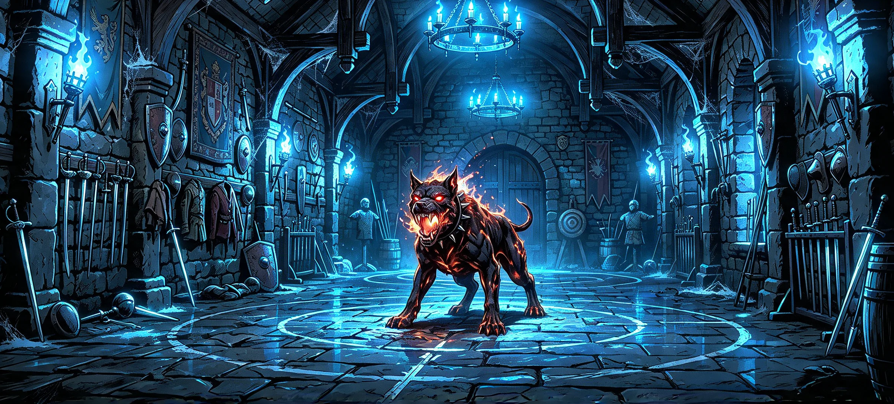

<!DOCTYPE html>
<html lang="it">
<head>
  <meta charset="UTF-8">
  <meta name="viewport" content="width=device-width, initial-scale=1">
  <title>Sala d'allenamento</title>
  <script src="lingua.js"></script>
  <script src="volume.js"></script>
  <style>
    /* Stessa impostazione di pagina di gioco.html, con in più la scheda del nemico a destra:
       scheda personaggio | linea | gioco | linea | scheda nemico */
    :root {
      /* azzurro = personaggio, arancione = nemico */
      --bg: #f5f7fa; --text: #1d2733; --muted: #5b6675; --line: #c9d1db; --accent: #2f6fed;
      --tip-bg: #e9f0fd; --tip-line: #b4c9f2; --pg-bg: #e6eefd; --pg-line: #8fb0f0;
      --fuoco: #c2531b; --nem-bg: #fcece2; --nem-line: #eba987;
      --ok: #23824a; --ok-bg: #e5f4ea; --ok-line: #8fcba3; --ko: #c0392b; --ko-bg: #fae6e4; --ko-line: #e3a29b;
    }
    @media (prefers-color-scheme: dark) {
      :root {
        --bg: #161b22; --text: #e8edf3; --muted: #9aa5b4; --line: #2f3844; --accent: #5b92ff;
        --tip-bg: #1e2a3f; --tip-line: #38527d; --pg-bg: #1b2a44; --pg-line: #4a74c4;
        --fuoco: #ff8a4c; --nem-bg: #33231a; --nem-line: #a85a32;
        --ok: #6fd39a; --ok-bg: #1b2e23; --ok-line: #3f7a55; --ko: #ff7b6b; --ko-bg: #34201f; --ko-line: #8a4640;
      }
    }
    * { box-sizing: border-box; }
    html, body { height: 100%; }
    body { margin: 0; background: var(--bg); color: var(--text); font-family: Georgia, "Times New Roman", serif; }

    /* ---------- Struttura ---------- */
    .app { display: grid; grid-template-columns: 20rem 1px minmax(0, 1fr) 1px 20rem; height: 100vh; height: 100dvh; }
    .divisore { background: linear-gradient(to bottom, transparent, var(--line) 14%, var(--line) 86%, transparent); }
    @media (max-width: 1250px) { .app { grid-template-columns: 17rem 1px minmax(0, 1fr) 1px 17rem; } .ritratto { width: 10rem; } }

    /* ---------- Schede (personaggio e nemico, stesso stile) ---------- */
    .scheda { overflow-y: auto; padding: 1.75rem 1.5rem; }
    .pg { display: flex; flex-direction: column; align-items: center; gap: 0.9rem; text-align: center; }
    .ritratto { width: 12rem; aspect-ratio: 900 / 1122; flex: none; border-radius: 0.6rem; border: 3px solid var(--accent); background-size: cover; background-position: 50% 0; }
    .nemico .ritratto { border-color: var(--fuoco); }
    .nome { font-size: 1.4rem; font-weight: 600; line-height: 1.2; }
    .nemico .nome { color: var(--fuoco); }
    .sub { color: var(--muted); font-size: 0.95rem; margin-top: 0.15rem; }
    .scheda dl { display: grid; grid-template-columns: auto 1fr; gap: 0.3rem 1rem; margin: 0; font-size: 0.97rem; }
    .scheda dt { color: var(--muted); }
    .scheda dd { margin: 0; text-align: right; }
    .scheda .vitali { margin-top: 1.25rem; }
    .scheda details.sez { margin-top: 1rem; }
    .scheda details.sez > summary { font-size: 1rem; font-weight: 600; cursor: pointer; list-style: none; padding: 0.3rem 0; border-bottom: 1px solid var(--line); display: flex; justify-content: space-between; }
    .scheda details.sez > summary::-webkit-details-marker { display: none; }
    .scheda details.sez > summary::after { content: "▾"; color: var(--muted); }
    .scheda details.sez[open] > summary::after { content: "▴"; }
    .scheda details.sez > :not(summary) { margin-top: 0.6rem; }
    .scheda dd.extra { grid-column: 1 / -1; text-align: left; margin-top: -0.15rem; }
    .scheda dt.addestrata { color: var(--text); font-weight: 600; }
    .scheda .vuoto { color: var(--muted); font-size: 0.88rem; margin: 0; }
    .scheda .condizione { margin: 0.75rem 0 0; font-style: italic; color: var(--muted); font-size: 0.95rem; text-align: center; }
    .scheda .esaurito { opacity: 0.5; }
    .completa > summary { display: none; }
    /* oggetto con descrizione a scomparsa (collare) */
    /* voci a scomparsa come in gioco.html: si clicca il nome per aprire i dettagli */
    .scheda .nome-btn { font: inherit; color: var(--text); background: none; border: 0; padding: 0; cursor: pointer; text-align: left; text-decoration: underline dotted var(--muted); text-underline-offset: 0.25rem; }
    .scheda dd .nome-btn { text-align: right; }
    .scheda .testo { margin: 0.4rem 0 0; padding: 0.6rem 0.8rem; background: var(--tip-bg); border: 1px solid var(--tip-line); border-radius: 0.5rem; font-size: 0.9rem; line-height: 1.5; text-align: left; color: var(--text); }
    .scheda .testo b { display: block; margin-bottom: 0.25rem; }
    .zaino .oggetto { margin: 0.45rem 0; font-size: 0.97rem; }
    .zaino .desc { color: var(--muted); font-size: 0.88rem; margin: 0; }
    .scheda small.malus { color: var(--muted); font-size: 0.85rem; }
    .colpito { animation: scuoti 0.35s ease-in-out; }
    @media (prefers-reduced-motion: reduce) { .colpito { animation: none; } }
    @keyframes scuoti { 0%,100% { transform: none; } 25% { transform: translateX(-4px); } 75% { transform: translateX(4px); } }

    /* ---------- Gioco ---------- */
    .gioco { display: flex; flex-direction: column; min-height: 0; }
    .barra { display: flex; align-items: center; justify-content: space-between; gap: 1rem; padding: 0.75rem max(1.5rem, calc((100% - 62rem) / 2)); border-bottom: 1px solid var(--line); }
    #statoTurno { color: var(--muted); font-size: 0.97rem; }
    #statoTurno.attivo { color: var(--text); font-weight: 600; }
    #esci { font: inherit; font-size: 1rem; font-weight: 600; padding: 0.55rem 1.2rem; border-radius: 0.5rem; cursor: pointer; background: var(--accent); color: var(--bg); border: 2px solid var(--accent); flex: none; text-decoration: none; }
    #esci:hover { filter: brightness(1.1); }
    .barra-dx { display: flex; align-items: center; gap: 0.6rem; flex: none; }
    #audio, #home { font: inherit; font-size: 1.05rem; line-height: 1; padding: 0.5rem 0.7rem; border-radius: 0.5rem; cursor: pointer; background: transparent; color: var(--text); border: 2px solid var(--line); text-decoration: none; display: inline-flex; align-items: center; }
    #audio:hover, #home:hover { border-color: var(--accent); }
    #diario { flex: 1; overflow-y: auto; min-height: 0; padding: 2rem max(1.5rem, calc((100% - 62rem) / 2)) 1rem; }
    .voce { margin: 0 0 1.5rem; }
    .voce p { font-size: 1.12rem; line-height: 1.75; margin: 0 0 1.1rem; }
    .voce p:last-child { margin-bottom: 0; }
    .voce h2.luogo { margin: 0 0 0.9rem; font-size: 1.6rem; font-weight: 600; letter-spacing: 0.04em; }
    .voce img.scena { display: block; width: 100%; height: auto; border-radius: 0.5rem; margin: 0 0 1.5rem; }
    details.voce.giocatore > summary { display: flex; align-items: baseline; gap: 0.6rem; cursor: pointer; list-style: none; color: var(--muted); font-style: italic; font-size: 1.12rem; line-height: 1.75; padding-left: 1rem; border-left: 2px solid var(--accent); }
    details.voce.giocatore > summary::-webkit-details-marker { display: none; }
    details.voce.giocatore > summary::before { content: "▸"; flex: none; font-style: normal; color: var(--accent); }
    details.voce.giocatore[open] > summary::before { content: "▾"; }
    details.voce.giocatore > .corpo { margin-top: 1.25rem; }
    details.voce.giocatore > .corpo > .voce:last-child { margin-bottom: 0; }
    /* tendina di un'azione con prova di abilità: verde se superata, rossa se fallita */
    details.voce.giocatore.t-ok, details.voce.giocatore.t-ko { padding: 0.75rem 1rem; border: 1px solid; border-radius: 0.5rem; }
    details.voce.giocatore.t-ok { background: var(--ok-bg); border-color: var(--ok-line); }
    details.voce.giocatore.t-ko { background: var(--ko-bg); border-color: var(--ko-line); }
    details.voce.giocatore.t-ok > summary { border-left-color: var(--ok); color: var(--ok); }
    details.voce.giocatore.t-ko > summary { border-left-color: var(--ko); color: var(--ko); }
    details.voce.giocatore.t-ok > summary::before { color: var(--ok); }
    details.voce.giocatore.t-ko > summary::before { color: var(--ko); }
    .voce .attenzione { color: var(--ko); }
    .voce.prova { padding: 1rem 1.25rem; border: 1px solid var(--accent); border-radius: 0.5rem; background: rgba(91,146,255,0.07); }
    .voce.prova p { margin: 0 0 0.5rem; }
    .voce.prova p.prova-titolo { font-weight: 700; font-size: 1.15rem; color: var(--accent); letter-spacing: 0.03em; }
    .voce.prova p.prova-azione { font-style: italic; }
    .voce.prova .prova-dati { display: flex; flex-wrap: wrap; gap: 0.5rem; margin: 0.25rem 0 0.75rem; }
    .voce.prova .prova-dati span { border: 1px solid var(--line); border-radius: 999px; padding: 0.15rem 0.8rem; font-size: 0.95rem; }
    .voce.prova p.regola { color: var(--muted); font-size: 1rem; }
    .voce.prova kbd { font-family: inherit; font-style: italic; font-weight: 600; color: var(--accent); background: none; }
    .voce.prova kbd.nem { color: var(--fuoco); }
    .voce.prova .evid { color: var(--accent); font-weight: 700; }
    /* riquadro di una mossa speciale del nemico (Presa) */
    .voce.prova.nemica { border-color: var(--fuoco); background: rgba(255,138,76,0.08); }
    .voce.prova.nemica p.prova-titolo { color: var(--fuoco); }
    .voce.sistema p { color: var(--muted); font-size: 1rem; margin: 0; }
    .voce.sistema kbd { font-family: inherit; font-style: italic; color: var(--text); }
    .voce p.esito-prova { font-weight: 600; color: var(--accent); }
    .voce p.banner { font-weight: 700; font-size: 1.25rem; text-align: center; margin-top: 1.5rem; }
    /* banner di fine scontro: verde se vinto, rosso se perso; sta fuori dalle tendine */
    .voce.esito-scontro { padding: 0.9rem 1.25rem; border: 2px solid; border-radius: 0.5rem; text-align: center; }
    .voce.esito-scontro p { margin: 0; font-size: 1.3rem; font-weight: 800; letter-spacing: 0.02em; }
    .voce.esito-scontro.ok { background: var(--ok-bg); border-color: var(--ok-line); color: var(--ok); }
    .voce.esito-scontro.ko { background: var(--ko-bg); border-color: var(--ko-line); color: var(--ko); }
    .voce.riquadro { padding: 1.25rem 1.5rem; border: 2px solid; border-radius: 0.5rem; }
    /* riquadri: azzurro per le azioni del personaggio, arancione per quelle del nemico */
    .voce.mia { background: var(--pg-bg); border-color: var(--pg-line); }
    .voce.nemico { background: var(--nem-bg); border-color: var(--nem-line); }
    .voce .tiro { display: block; margin-top: 0.4rem; font-weight: 600; font-size: 1rem; }
    .voce .tiro-pg { color: var(--accent); }
    .voce .tiro-nem { color: var(--fuoco); }
    .voce .tiro-pg + .tiro-nem { margin-top: 0.15rem; }
    /* Colpito / Mancato / Successo / Fallimento in apertura: più grandi e in grassetto */
    .voce .esito { display: inline-block; font-size: 1.3rem; font-weight: 800; letter-spacing: 0.01em; margin-right: 0.35rem; }
    /* stesso criterio per "Attacco", "Danni", "Tu", "Mastino": grassetto, più grande, colore di chi agisce */
    .voce .lab { font-size: 1.15rem; font-weight: 800; }
    .voce.mia .esito, .voce.mia .lab, .voce.mia p.esito-prova { color: var(--accent); }
    .voce.nemico .esito, .voce.nemico .lab { color: var(--fuoco); }
    .voce .tiro-pg .lab { color: var(--accent); }
    .voce .tiro-nem .lab { color: var(--fuoco); }
    /* prove di abilità: verde se superata, rosso se fallita */
    .voce.ok { background: var(--ok-bg); border-color: var(--ok-line); }
    .voce.ko { background: var(--ko-bg); border-color: var(--ko-line); }
    .voce.ok .esito, .voce.ok .lab { color: var(--ok); }
    .voce.ko .esito, .voce.ko .lab { color: var(--ko); }
    .voce.ok p.esito-prova, .voce.ko p.esito-prova { color: var(--text); }
    .voce.riquadro p.esito-prova { font-size: 1.05rem; }
    .voce.riquadro p.esito-prova .esito { font-size: 1.3rem; }

    .comandi { border-top: 1px solid var(--line); padding: 1rem max(1.5rem, calc((100% - 62rem) / 2)) 1.25rem; }
    #azioni { display: flex; flex-wrap: wrap; gap: 0.75rem; margin-bottom: 0.9rem; }
    #azioni button, #form button { font: inherit; font-size: 1.05rem; padding: 0.7rem 1.1rem; border-radius: 0.5rem; cursor: pointer; background: transparent; color: var(--text); border: 2px solid var(--accent); }
    #azioni button:hover:not(:disabled), #form button:hover:not(:disabled) { background: color-mix(in srgb, var(--accent) 12%, transparent); }
    #azioni button:disabled, #form button:disabled { opacity: 0.45; cursor: not-allowed; border-color: var(--line); }
    #form { display: flex; gap: 0.75rem; }
    #testo { flex: 1; min-width: 0; font: inherit; font-size: 1.05rem; padding: 0.7rem 1rem; border-radius: 0.5rem; border: 2px solid var(--line); background: transparent; color: var(--text); }
    #testo::placeholder { color: var(--muted); }
    #testo:disabled { opacity: 0.6; }
    #testo:focus-visible, button:focus-visible, summary:focus-visible, a:focus-visible { outline: 3px solid var(--accent); outline-offset: 3px; }

    /* ---------- Schermi stretti: le due schede in alto, affiancate e compatte ---------- */
    @media (max-width: 980px) {
      .app { grid-template-columns: 1fr 1px 1fr; grid-template-rows: auto 1px minmax(0, 1fr); }
      #schedaPg { grid-column: 1; grid-row: 1; }
      #divNem { grid-column: 2; grid-row: 1; background: linear-gradient(to bottom, transparent, var(--line) 14%, var(--line) 86%, transparent); }
      #schedaNem { grid-column: 3; grid-row: 1; }
      #divPg { grid-column: 1 / -1; grid-row: 2; background: linear-gradient(to right, transparent, var(--line) 14%, var(--line) 86%, transparent); }
      .gioco { grid-column: 1 / -1; grid-row: 3; }
      .scheda { padding: 1rem 1.25rem; max-height: 40vh; }
      .pg { flex-direction: row; text-align: left; gap: 1rem; }
      .ritratto { width: 5rem; }
      .completa > summary { display: block; cursor: pointer; color: var(--muted); margin-top: 0.75rem; }
      .scheda .vitali { margin-top: 0.75rem; }
    }
    @media (max-width: 560px) {
      .barra { padding: 0.6rem 1rem; gap: 0.5rem; }
      #statoTurno { font-size: 0.85rem; min-width: 0; }
      .barra-dx { gap: 0.4rem; }
      #esci { font-size: 0.85rem; padding: 0.45rem 0.7rem; }
      #audio, #home { padding: 0.45rem 0.55rem; }
      .scheda { padding: 0.75rem; }
      .pg { flex-direction: column; align-items: flex-start; gap: 0.5rem; }
      .ritratto { width: 3.5rem; }
      .nome { font-size: 1.1rem; }
      .scheda dl { font-size: 0.88rem; gap: 0.2rem 0.5rem; }
    }
  </style>
</head>
<body>
  <div class="app">
    <!-- Scheda del personaggio -->
    <aside class="scheda" id="schedaPg">
      <div class="pg">
        <div class="ritratto" id="ritrattoPg" hidden></div>
        <div>
          <div class="nome" id="nomePg"></div>
          <div class="sub" id="subPg"></div>
        </div>
      </div>
      <dl class="vitali" id="vitaliPg"></dl>
      <details class="completa" open>
        <summary data-t="completa"></summary>
        <details class="sez"><summary data-t="caratteristiche"></summary><dl id="statPg"></dl></details>
        <details class="sez"><summary data-t="abilita"></summary><dl id="abilPg"></dl></details>
        <details class="sez"><summary data-t="equipaggiamento"></summary><dl id="equipPg"></dl></details>
        <details class="sez" id="zainoBox"><summary data-t="zaino"></summary><div id="zainoPg" class="zaino"></div></details>
      </details>
    </aside>

    <div class="divisore" id="divPg" role="presentation"></div>

    <main class="gioco">
      <div class="barra">
        <span id="statoTurno" role="status"></span>
        <div class="barra-dx">
          <a id="esci" href="index.html"></a>
          <button type="button" id="audio"></button>
          <a id="home" href="index.html"><svg viewBox="0 0 24 24" width="20" height="20" fill="none" stroke="currentColor" stroke-width="1.8" stroke-linecap="round" stroke-linejoin="round" aria-hidden="true"><path d="M5.5 21V11.5a6.5 6.5 0 0 1 13 0V21" fill="currentColor" fill-opacity="0.15"/><path d="M3.5 21h17"/><path d="M12 5v16"/><circle cx="10.2" cy="14" r="0.7" fill="currentColor"/><circle cx="13.8" cy="14" r="0.7" fill="currentColor"/></svg></a>
        </div>
      </div>
      <section id="diario" aria-live="polite"></section>
      <div class="comandi">
        <div id="azioni" hidden></div>
        <form id="form" autocomplete="off">
          <input id="testo" type="text" maxlength="200">
          <button type="submit" id="invia"></button>
        </form>
      </div>
    </main>

    <div class="divisore" id="divNem" role="presentation"></div>

    <!-- Scheda del nemico: immagine e nome visibili, il resto si svela solo a belva sconfitta -->
    <aside class="scheda nemico" id="schedaNem">
      <div class="pg">
        <div class="ritratto" id="ritrattoNem" style="background-image:url('immagini/nemici/Mastino_Infernale.webp')"></div>
        <div>
          <div class="nome" id="nomeNem"></div>
          <div class="sub" id="subNem"></div>
        </div>
      </div>
      <dl class="vitali" id="vitaliNem"></dl>
      <p class="condizione" id="condNem"></p>
      <details class="completa" open>
        <summary data-t="completa"></summary>
        <details class="sez"><summary data-t="caratteristiche"></summary><div id="statNem"></div></details>
        <details class="sez"><summary data-t="abilita"></summary><div id="abilNem"></div></details>
        <details class="sez"><summary data-t="equipaggiamento"></summary><div id="equipNem"></div></details>
      </details>
    </aside>
  </div>

  <script>
    /* =====================================================================
       SALA D'ALLENAMENTO — tutorial di combattimento.
       Il giocatore scrive cosa fa, come in gioco.html; il "Manuale di combattimento" suggerisce cosa scrivere.
       Non tocca i personaggi salvati: usa un guerriero di prova con valori fissi.
       Regole (come in gioco.html):
         prova      = d20 + modificatore  ≥ CD
         attacco    = d20 + mod Lotta     ≥ Classe armatura del bersaglio
         danno      = dado dell'arma + mod Lotta
         modificatore = (valore − 10) / 2 arrotondato per difetto
       ===================================================================== */
    const LINGUA = (window.Lingua && Lingua.get && Lingua.get()) === "en" ? "en" : "it";
    document.documentElement.lang = LINGUA;

    const ATTR = ["Lotta", "Agilità", "Mente", "Corpo", "Carisma", "Spirito"];

    const T = {
      it: {
        pagina: "Sala d'allenamento", esci: "← Torna all'ingresso",
        titolo: "SALA D'ALLENAMENTO - ADDESTRAMENTO DI BASE",
        intro: "Ti trovi all'interno dell'antica sala d'armi della fortezza. L'aria è densa di fumo, cera squagliata e un persistente odore di zolfo.",
        manualeTit: "— [ MANUALE DI COMBATTIMENTO: FASE DI TUTORIAL ] —",
        manualeTxt: "Usa i comandi di base per muoverti, difenderti e sferrare i tuoi primi colpi. Impara a sopravvivere prima che la belva colpisca.",
        descrTit: "La sala d'armi",
        descr: [
          "I tuoi stivali poggiano su massicce lastre di pietra scura, levigate da secoli di passi e segnate da vecchie battaglie. Tracciati a calce bianca, geometrie da scherma e un ampio cerchio rituale delimitano l'area del tuo battesimo del fuoco.",
          "Mura di pietra grezza trasudano umidità, adornate da antichi stendardi araldici sbiaditi, scudi ammaccati e giachi di maglia arrugginiti. Rastrelliere di ferro battuto sostengono spade, stocchi e lance da combattimento. Torce a muro crepitano nell'ombra, proiettando bagliori sinistri sulle pareti.",
          "Spesse travi di quercia secolare s'incurvano sopra di te a formare un'imponente volta a botte. Da catene d'acciaio pendono pesanti lampadari circolari; le loro candele illuminano a fatica i drappi di ragnatele che testimoniano il lungo abbandono della stanza.",
          "Lungo i margini della sala scorgi sagome di paglia trafitte, manichini di legno segnati da centinaia di fendenti, bersagli per il tiro e vecchie botti stipate nell'ombra: i muti testimoni di innumerevoli addestramenti.",
          "Al centro esatto del cerchio di gesso, accucciato e pronto a scattare, ti attende un Mastino Infernale. Fiamme vive gli scorrono sulla groppa e gli bruciano negli occhi sanguigni. Tra le fauci spalancate scorgi zanne affilate come pugnali da cui gocciola bava infuocata. Un metallico collare borchiato gli serra il collo mentre un ringhio profondo fa tremare la pietra sotto i tuoi piedi."
        ],
        alt: "La sala d'armi della fortezza: pavimento di pietra con un cerchio di gesso, rastrelliere d'armi, manichini e torce azzurre; al centro un mastino infernale avvolto dalle fiamme.",
        saluteFisica: "Salute fisica", saluteMentale: "Salute mentale", classeArmatura: "Classe armatura", dadoVita: "Dado vita",
        statistiche: "Statistiche", abilita: "Abilità", equipaggiamento: "Equipaggiamento", attacchi: "Attacchi", diario: "Diario dello scontro",
        attr: { Lotta: "Lotta", "Agilità": "Agilità", Mente: "Mente", Corpo: "Corpo", Carisma: "Carisma", Spirito: "Spirito" },
        ab: { Percezione: "Percezione", Indagare: "Indagare", Medicina: "Medicina", Atletica: "Atletica" },
        pgNome: "Recluta", pgSotto: "Umano — Guerriero · Livello 1",
        eq: {
          spada: ["Spada corta", "1d6 + Lotta · tagliente · 1 mano"],
          armatura: ["Armatura leggera", "+2 classe armatura"],
          scudo: ["Scudo", "+1 classe armatura · malus Agilità −1"],
          pozione: ["Pozione di salute", (n) => n ? "1 utilizzo · cura 2d4" : "Esaurita"],
          torcia: ["Torcia", (n) => n ? `${n} utilizzi · 1d4 + Lotta · contundente` : "Consumata"]
        },
        nemNome: "Mastino Infernale", nemSotto: "Belva infernale · Livello 1",
        nemVelata: "Scheda sconosciuta. Ne scoprirai i segreti solo quando la belva sarà a terra.",
        cond: ["Ringhia furioso: sembra ancora del tutto integro.", "È ferito: dal pelo strappato cadono braci.", "Barcolla, il respiro rotto: le fiamme sulla groppa si affievoliscono.", "Giace immobile nel cerchio di gesso."],
        morso: "Morso", zampata: "Zampata", presaNome: "Presa (speciale)",
        attMorso: "1d4 + Lotta · perforante", attZampata: "1d4 + Lotta · tagliente", attPresa: "una volta per scontro, a sorpresa · prova contrapposta di Lotta · +1d4 danni",

        turnoIntro: "Preparazione", round: (n) => `Round ${n}`, tuo: "tocca a te", suo: "tocca al Mastino",
        esplora: "Dopo lo scontro", fine: "Addestramento completato", caduto: "Sei caduto",

        cIntro: [
          "Questa è la tua scheda: un guerriero umano di prova, con tutte le statistiche a <b>14</b> (modificatore <b>+2</b>).",
          "<span class='regola'><b>Come si combatte.</b> Per colpire tiri un d20 e aggiungi il modificatore di Lotta: se il totale raggiunge la Classe armatura del bersaglio, lo colpisci. Il danno è il dado dell'arma più il modificatore di Lotta.</span>",
          "<span class='regola'><b>Chi comincia.</b> Agisce per primo chi ha il valore di Agilità più alto. A ogni turno puoi compiere un'azione: attaccare oppure bere la pozione. Cambiare l'oggetto nella mano sinistra fa parte dell'azione e non ti fa perdere il turno.</span>",
          "Del Mastino non sai nulla: la sua scheda resterà coperta finché non lo avrai abbattuto."
        ],
        affronta: "Affronta il Mastino",

        iniziativa: (a, b) => `Iniziativa: la tua Agilità (${a}) contro quella del Mastino (${b}).`,
        iniziaPg: "Sei più rapido: agisci per primo.",
        iniziaNem: "La belva è più rapida: agisce per prima.",
        pari: (x, y) => `Agilità pari: si tira un d20 a testa. Tu ${x}, il Mastino ${y}.`,
        risveglio: "Il Mastino si solleva sulle zampe. Le fiamme sulla groppa divampano e il cerchio di gesso si illumina di riflessi rossastri.",

        cTurno: "È il tuo turno. Scegli un'azione.",
        cPrimoTurno: "<span class='regola'>Attaccare con la spada: d20 + 2 contro la Classe armatura del Mastino. Se colpisci, infliggi 1d6 + 2 danni. Puoi anche impugnare la torcia al posto dello scudo prima di agire: perdi 1 punto di Classe armatura, ma guadagni un secondo attacco possibile.</span>",
        cFerito: "<span class='regola'>Sei ferito: bere la pozione di salute occupa tutto il turno, ma ti restituisce 2d4 punti.</span>",
        attSpada: "Attacca con la spada corta", attSpadaSub: "d20 + 2 · danno 1d6 + 2",
        attTorcia: "Colpisci con la torcia", attTorciaSub: (n) => `d20 + 2 · danno 1d4 + 2 · ${n} utilizzi`,
        bevi: "Bevi la pozione di salute", beviSub: "cura 2d4 · fine del turno", beviPieno: "sei già in piena salute",
        aTorcia: "Riponi lo scudo e impugna la torcia", aScudo: "Riponi la torcia e imbraccia lo scudo", aScudoVuota: "Imbraccia lo scudo",
        cambioSub: "fa parte dell'azione", cambioFatto: "già cambiato in questo turno",
        logTorcia: "Agganci lo scudo alla schiena e afferri una torcia: la fiamma sibila nell'aria umida. (Classe armatura 12)",
        logScudo: "Rinfili il braccio nelle cinghie dello scudo. (Classe armatura 13)",
        logScudoVuota: "La mano sinistra è libera: imbracci di nuovo lo scudo. (Classe armatura 13)",
        torciaSpenta: "La torcia si consuma e si spegne tra le tue dita: la getti a terra. La mano sinistra resta libera.",

        tiroAtt: (tot, ca) => `<span class="lab">Attacco</span> = <b>${tot}</b> contro CA ${ca}`,
        tiroDanno: (tot) => `<span class="lab">Danni</span> = <b>${tot}</b>`,
        colpito: "Colpito", mancato: "Mancato",
        pgColpSpada: ["La lama corta affonda nel fianco della belva: un getto di braci sfrigola sulla pietra.", "Il tuo fendente apre un solco nel pelo fumante del Mastino.", "Pari un balzo e affondi la spada sotto la mascella della belva."],
        pgColpTorcia: ["Abbatti la torcia sul muso del Mastino: il colpo lo fa guaire più del fuoco.", "Il legno della torcia si schianta sulla zampa anteriore della belva."],
        pgManca: ["La belva scarta di lato e il tuo colpo trova solo aria.", "La lama stride contro il collare borchiato senza ferire.", "Il Mastino arretra con un balzo: il tuo colpo cade a vuoto."],
        logBevi: (c, tot) => `Stappi la fiala e la bevi d'un fiato: un calore buono ti scorre nelle vene.<span class="tiro">2d4 <b>${c}</b> = <b>${tot}</b> punti di salute recuperati</span>`,

        nemMorsoOk: ["Le zanne infuocate si chiudono sul tuo braccio: senti la carne sfrigolare.", "Il Mastino ti azzanna la coscia e scuote la testa con ferocia."],
        nemZampaOk: ["Una zampata ardente ti squarcia il fianco, lasciando una scia di cenere.", "Gli artigli roventi ti graffiano il petto attraverso il cuoio."],
        nemManca: ["Le fauci scattano a un palmo dal tuo volto: lo scudo devia il colpo.", "Gli artigli stridono sull'armatura senza affondare.", "Ti scansi all'ultimo istante: la belva sbatte contro la pietra."],
        nemAgisce: (a) => `Il Mastino attacca: ${a}.`,

        presaLog: "Il Mastino non molla: approfitta del colpo, ti serra tra le fauci e ti trascina verso il centro del cerchio!",
        cPresa: [
          "<b>Azione speciale: la Presa.</b> Una volta per scontro, quando meno te lo aspetti, la belva può afferrarti.",
          "<span class='regola'>Prova contrapposta di Lotta: tu tiri d20 + 2, il Mastino d20 + 0. Se il suo totale è più alto, ti infligge 1d4 danni aggiuntivi. Se vinci tu, ti liberi senza altri vantaggi. In caso di parità prevale chi si difende: tu.</span>"
        ],
        presaTira: "Lancia d20 + Lotta (+2)", presaTiraSub: "prova contrapposta",
        presaTiro: (a, b, c, d) => `Tu: d20 <b>${a}</b> + 2 = <b>${b}</b> · Mastino: d20 <b>${c}</b> + 0 = <b>${d}</b>`,
        presaVince: (d) => `La belva ti stringe più forte e scuote la testa: <b>${d}</b> danni aggiuntivi.`,
        presaPerde: "Fai leva sullo scudo e ti divincoli: le fauci si richiudono sul vuoto.",
        dopoPresa: "Ancora ringhiante, il Mastino torna all'attacco.",

        vittoriaLog: "Con un ultimo guaito il Mastino Infernale si accascia nel cerchio di gesso. Le fiamme sulla groppa si spengono una a una, lasciando solo un filo di fumo che sa di zolfo.",
        rivelata: "La scheda del Mastino ora è scoperta.",
        cEsplora: [
          "<b>Lo scontro è finito.</b> Ora impara a interagire con l'ambiente: ogni oggetto della sala può nascondere qualcosa.",
          "<span class='regola'>Una prova di abilità è un d20 più il valore dell'abilità; se raggiungi la difficoltà (CD) riesci. Le abilità che conosci aggiungono anche il tuo livello: per questo valgono +3.</span>",
          "Scegli cosa fare. Ogni prova si può tentare una sola volta."
        ],
        prove: {
          medicina: {
            bottone: "Esamina il corpo del Mastino", abilita: "Medicina", cd: 10,
            intro: "Ti inginocchi accanto alla carcassa. Il calore che ne emana è ancora intenso e il pelo fuma.",
            ok: "Le ferite non sanguinano: il sangue della belva si è rappreso in grumi neri e friabili, simili a carbone. Sotto il collare la pelle è segnata da vecchie cicatrici di catene. Questa creatura è stata tenuta prigioniera a lungo prima di arrivare qui.",
            ko: "Il calore ti respinge prima che tu possa esaminare bene le ferite. Ti resta solo l'odore acre di zolfo e pelo bruciato."
          },
          percezione: {
            bottone: "Osserva la sala con attenzione", abilita: "Percezione", cd: 12,
            intro: "Ti fermi al centro del cerchio e lasci che lo sguardo scorra lungo le pareti, i manichini e le botti nell'ombra.",
            ok: "Dietro uno dei bersagli per il tiro noti un segno sulla pietra: una piccola runa incisa di recente, ancora calda al tatto. Le ragnatele intorno sono strappate: qualcuno è passato di qui da poco.",
            ko: "Tra fumo e ombre tremolanti non noti nulla di insolito: solo polvere, ragnatele e vecchie armi."
          },
          indagare: {
            bottone: "Studia il collare borchiato", abilita: "Indagare", cd: 10,
            intro: "Sganci con cautela il collare di metallo dal collo della belva e lo rigiri tra le mani.",
            ok: "All'interno del collare è inciso un marchio: una corona spezzata avvolta dalle fiamme. Il fermaglio non è da addestramento: è un sigillo pensato per contenere. Qualcuno ha voluto questa belva qui, e non per allenare le reclute.",
            ko: "Il metallo è annerito e le incisioni sono coperte di fuliggine. Non riesci a ricavarne nulla di utile."
          }
        },
        lancia: (cd) => `Lancia d20 + 3 contro CD ${cd}`, lascia: "Lascia perdere",
        provaTit: (a, cd) => `Prova di ${a} · CD ${cd}`,
        tiroProva: (tot, cd) => `<b>${tot}</b> contro CD ${cd}`,
        successo: "Successo", fallimento: "Fallimento", lasciato: "Decidi di lasciar perdere, per ora.",
        fatto: "già tentato",

        fineLog: "Il fumo si dirada. Dall'alto, il cigolio delle catene dei lampadari sembra quasi un applauso.",
        cFine: [
          "<b>Addestramento completato.</b> Hai imparato a leggere la tua scheda, a combattere un turno dopo l'altro, a usare una risorsa e a esplorare con le prove di abilità.",
          "Ora sei pronto per il dungeon vero. Lì nessuno ti darà un guerriero già pronto."
        ],
        torna: "Torna alla pagina iniziale", ripeti: "Ripeti l'addestramento",

        sconfittaLog: "Le gambe ti cedono e crolli sulla pietra. Il Mastino ti sovrasta, ma una catena invisibile lo trattiene a un passo dal tuo volto: in questa sala nessuno muore davvero.",
        cSconfitta: [
          "<b>Sei caduto.</b> Nella sala d'allenamento la sconfitta non ha conseguenze.",
          "<span class='regola'>Suggerimento: quando la salute scende sotto la metà, la pozione può valere più di un attacco. E con lo scudo imbracciato la belva fatica di più a colpirti.</span>"
        ],
        riprova: "Riprova lo scontro"
      },

      en: {
        pagina: "Training hall", esci: "← Back to the entrance",
        titolo: "TRAINING HALL - BASIC TRAINING",
        intro: "You stand inside the fortress's ancient armoury. The air is thick with smoke, melted wax and a lingering smell of sulphur.",
        manualeTit: "— [ COMBAT MANUAL: TUTORIAL PHASE ] —",
        manualeTxt: "Use the basic commands to move, defend yourself and land your first blows. Learn to survive before the beast strikes.",
        descrTit: "The armoury",
        descr: [
          "Your boots rest on massive slabs of dark stone, worn smooth by centuries of footsteps and scarred by old battles. Fencing patterns drawn in white chalk and a wide ritual circle mark out the ground of your baptism of fire.",
          "Walls of rough stone seep with damp, hung with faded heraldic banners, dented shields and rusted mail shirts. Wrought-iron racks hold swords, rapiers and fighting spears. Wall torches crackle in the gloom, casting sinister gleams across the stone.",
          "Thick beams of ancient oak curve above you into an imposing barrel vault. Heavy round chandeliers hang from steel chains; their candles barely light the drapes of cobweb that bear witness to the room's long neglect.",
          "Around the edges of the hall you make out pierced straw figures, wooden dummies marked by hundreds of cuts, archery targets and old barrels crammed into the shadows: the silent witnesses of countless training sessions.",
          "In the exact centre of the chalk circle, crouched and ready to spring, a Hellhound awaits you. Living flames run along its back and burn in its blood-red eyes. Between its gaping jaws you see fangs sharp as daggers, dripping with fiery slaver. A studded metal collar clamps its neck as a deep growl makes the stone tremble beneath your feet."
        ],
        alt: "The fortress armoury: a stone floor with a chalk circle, weapon racks, training dummies and blue torches; in the centre, a hellhound wreathed in flames.",
        saluteFisica: "Physical health", saluteMentale: "Mental health", classeArmatura: "Armor class", dadoVita: "Hit die",
        statistiche: "Attributes", abilita: "Skills", equipaggiamento: "Equipment", attacchi: "Attacks", diario: "Combat log",
        attr: { Lotta: "Might", "Agilità": "Agility", Mente: "Mind", Corpo: "Body", Carisma: "Charisma", Spirito: "Spirit" },
        ab: { Percezione: "Perception", Indagare: "Investigation", Medicina: "Medicine", Atletica: "Athletics" },
        pgNome: "Recruit", pgSotto: "Human — Warrior · Level 1",
        eq: {
          spada: ["Short sword", "1d6 + Might · slashing · 1 hand"],
          armatura: ["Light armor", "+2 armor class"],
          scudo: ["Shield", "+1 armor class · Agility penalty −1"],
          pozione: ["Health potion", (n) => n ? "1 use · heals 2d4" : "Used up"],
          torcia: ["Torch", (n) => n ? `${n} uses · 1d4 + Might · bludgeoning` : "Burnt out"]
        },
        nemNome: "Hellhound", nemSotto: "Infernal beast · Level 1",
        nemVelata: "Unknown sheet. You will learn its secrets only once the beast is down.",
        cond: ["Snarling with fury: it looks completely unharmed.", "It is wounded: embers fall from its torn hide.", "It staggers, breath ragged: the flames on its back are dying down.", "It lies still in the chalk circle."],
        morso: "Bite", zampata: "Claw", presaNome: "Grab (special)",
        attMorso: "1d4 + Might · piercing", attZampata: "1d4 + Might · slashing", attPresa: "once per fight, by surprise · opposed Might check · +1d4 damage",

        turnoIntro: "Preparation", round: (n) => `Round ${n}`, tuo: "your turn", suo: "the Hellhound's turn",
        esplora: "After the fight", fine: "Training complete", caduto: "You have fallen",

        cIntro: [
          "This is your sheet: a test human warrior, with every attribute at <b>14</b> (modifier <b>+2</b>).",
          "<span class='regola'><b>How to fight.</b> To hit, roll a d20 and add your Might modifier: if the total reaches the target's Armor class, you hit. Damage is the weapon die plus your Might modifier.</span>",
          "<span class='regola'><b>Who goes first.</b> Whoever has the higher Agility acts first. Each turn you take one action: attack or drink the potion. Swapping the item in your left hand is part of the action and does not cost you the turn.</span>",
          "You know nothing about the Hellhound: its sheet stays hidden until you bring it down."
        ],
        affronta: "Face the Hellhound",

        iniziativa: (a, b) => `Initiative: your Agility (${a}) against the Hellhound's (${b}).`,
        iniziaPg: "You are quicker: you act first.",
        iniziaNem: "The beast is quicker: it acts first.",
        pari: (x, y) => `Agility tied: each side rolls a d20. You ${x}, the Hellhound ${y}.`,
        risveglio: "The Hellhound rises on its paws. The flames on its back flare up and the chalk circle glows with reddish reflections.",

        cTurno: "It is your turn. Choose an action.",
        cPrimoTurno: "<span class='regola'>Attack with the sword: d20 + 2 against the Hellhound's Armor class. If you hit, you deal 1d6 + 2 damage. You can also take up the torch instead of the shield before acting: you lose 1 point of Armor class but gain another way to attack.</span>",
        cFerito: "<span class='regola'>You are wounded: drinking the health potion takes your whole turn, but restores 2d4 points.</span>",
        attSpada: "Attack with the short sword", attSpadaSub: "d20 + 2 · damage 1d6 + 2",
        attTorcia: "Strike with the torch", attTorciaSub: (n) => `d20 + 2 · damage 1d4 + 2 · ${n} uses`,
        bevi: "Drink the health potion", beviSub: "heals 2d4 · ends the turn", beviPieno: "you are already at full health",
        aTorcia: "Stow the shield and take up the torch", aScudo: "Stow the torch and take up the shield", aScudoVuota: "Take up the shield",
        cambioSub: "part of the action", cambioFatto: "already swapped this turn",
        logTorcia: "You hook the shield on your back and grab a torch: the flame hisses in the damp air. (Armor class 12)",
        logScudo: "You slide your arm back into the shield straps. (Armor class 13)",
        logScudoVuota: "Your left hand is free: you take up the shield again. (Armor class 13)",
        torciaSpenta: "The torch burns down and goes out in your fingers: you drop it. Your left hand is now free.",

        tiroAtt: (tot, ca) => `<span class="lab">Attack</span> = <b>${tot}</b> vs AC ${ca}`,
        tiroDanno: (tot) => `<span class="lab">Damage</span> = <b>${tot}</b>`,
        colpito: "Hit", mancato: "Miss",
        pgColpSpada: ["The short blade sinks into the beast's flank: a spray of embers sizzles on the stone.", "Your slash carves a furrow through the Hellhound's smoking hide.", "You parry a lunge and drive the sword under the beast's jaw."],
        pgColpTorcia: ["You bring the torch down on the Hellhound's muzzle: the blow makes it yelp more than the fire.", "The torch's wood cracks against the beast's foreleg."],
        pgManca: ["The beast leaps aside and your blow finds only air.", "The blade screeches against the studded collar without biting.", "The Hellhound springs back: your strike falls short."],
        logBevi: (c, tot) => `You uncork the vial and drain it in one go: a kindly warmth runs through your veins.<span class="tiro">2d4 <b>${c}</b> = <b>${tot}</b> health restored</span>`,

        nemMorsoOk: ["The fiery fangs close on your arm: you feel your flesh sizzle.", "The Hellhound bites your thigh and shakes its head savagely."],
        nemZampaOk: ["A burning claw rakes your side, leaving a trail of ash.", "Red-hot talons scratch your chest through the leather."],
        nemManca: ["The jaws snap a hand's breadth from your face: the shield turns the blow.", "The claws screech on your armor without sinking in.", "You dodge at the last moment: the beast slams into the stone."],
        nemAgisce: (a) => `The Hellhound attacks: ${a}.`,

        presaLog: "The Hellhound does not let go: it follows up its blow, clamps you in its jaws and drags you towards the centre of the circle!",
        cPresa: [
          "<b>Special action: the Grab.</b> Once per fight, when you least expect it, the beast can seize you.",
          "<span class='regola'>Opposed Might check: you roll d20 + 2, the Hellhound d20 + 0. If its total is higher, it deals 1d4 extra damage. If you win, you break free with no further advantage. On a tie the defender wins: you.</span>"
        ],
        presaTira: "Roll d20 + Might (+2)", presaTiraSub: "opposed check",
        presaTiro: (a, b, c, d) => `You: d20 <b>${a}</b> + 2 = <b>${b}</b> · Hellhound: d20 <b>${c}</b> + 0 = <b>${d}</b>`,
        presaVince: (d) => `The beast tightens its grip and shakes its head: <b>${d}</b> extra damage.`,
        presaPerde: "You lever yourself free with the shield: the jaws snap shut on nothing.",
        dopoPresa: "Still snarling, the Hellhound attacks again.",

        vittoriaLog: "With a last whine the Hellhound collapses in the chalk circle. The flames on its back go out one by one, leaving only a thread of smoke that smells of sulphur.",
        rivelata: "The Hellhound's sheet is now revealed.",
        cEsplora: [
          "<b>The fight is over.</b> Now learn to interact with your surroundings: anything in the hall may hide something.",
          "<span class='regola'>A skill check is a d20 plus the skill's value; if you reach the difficulty (DC) you succeed. Skills you know also add your level: that is why they are worth +3.</span>",
          "Choose what to do. Each check can be attempted only once."
        ],
        prove: {
          medicina: {
            bottone: "Examine the Hellhound's body", abilita: "Medicina", cd: 10,
            intro: "You kneel beside the carcass. The heat coming off it is still intense and its hide is smoking.",
            ok: "The wounds are not bleeding: the beast's blood has clotted into black, crumbly lumps, like coal. Under the collar the skin is marked by old chain scars. This creature was held captive for a long time before it came here.",
            ko: "The heat drives you back before you can examine the wounds properly. All you are left with is the acrid smell of sulphur and burnt fur."
          },
          percezione: {
            bottone: "Look carefully around the hall", abilita: "Percezione", cd: 12,
            intro: "You stop in the centre of the circle and let your gaze run along the walls, the dummies and the barrels in the shadows.",
            ok: "Behind one of the archery targets you notice a mark on the stone: a small, freshly carved rune, still warm to the touch. The cobwebs around it are torn: someone passed this way recently.",
            ko: "Through the smoke and flickering shadows you notice nothing unusual: only dust, cobwebs and old weapons."
          },
          indagare: {
            bottone: "Study the studded collar", abilita: "Indagare", cd: 10,
            intro: "You carefully unclasp the metal collar from the beast's neck and turn it over in your hands.",
            ok: "Inside the collar a mark is engraved: a broken crown wreathed in flames. The clasp is not a training device: it is a seal meant to contain. Someone wanted this beast here, and not to train recruits.",
            ko: "The metal is blackened and the engravings are caked with soot. You cannot make out anything useful."
          }
        },
        lancia: (cd) => `Roll d20 + 3 vs DC ${cd}`, lascia: "Leave it",
        provaTit: (a, cd) => `${a} check · DC ${cd}`,
        tiroProva: (tot, cd) => `<b>${tot}</b> vs DC ${cd}`,
        successo: "Success", fallimento: "Failure", lasciato: "You decide to leave it, for now.",
        fatto: "already attempted",

        fineLog: "The smoke thins. Above you, the creak of the chandelier chains sounds almost like applause.",
        cFine: [
          "<b>Training complete.</b> You have learned to read your sheet, to fight one turn after another, to use a resource and to explore with skill checks.",
          "Now you are ready for the real dungeon. There, nobody will hand you a ready-made warrior."
        ],
        torna: "Back to the home page", ripeti: "Repeat the training",

        sconfittaLog: "Your legs give way and you collapse onto the stone. The Hellhound looms over you, but an invisible chain holds it back a step from your face: in this hall nobody truly dies.",
        cSconfitta: [
          "<b>You have fallen.</b> In the training hall, defeat has no consequences.",
          "<span class='regola'>Tip: when your health drops below half, the potion can be worth more than an attack. And with the shield up, the beast has a harder time hitting you.</span>"
        ],
        riprova: "Retry the fight"
      }
    };
    /* testi aggiunti o sostituiti per l'interazione scritta */
    const T2 = {
      it: {
        manualeTxt: "Usa i comandi di base per muoverti, difenderti, sferrare i tuoi primi colpi ed interagire con l'ambiente.",
        caratteristiche: "Caratteristiche", puntiSalute: "Punti salute", puntiMentali: "Punti mentali", classeArmaturaG: "Classe Armatura",
        manoPrimaria: "Mano primaria", manoSecondaria: "Mano secondaria", armaturaG: "Armatura", livello: "livello",
        caBonus: (n) => `CA +${n}`, malusAg: (n) => `Malus Agilità −${n}`, noMalus: "Nessun malus Agilità", mani: (n) => (n === 1 ? "1 mano" : n + " mani"),
        modLotta: "mod. Lotta", malusEquip: (n) => ` (equipaggiamento −${n})`, zainoVuoto: "Lo zaino è vuoto.",
        abTutte: { "Furtività": "Furtività", Indagare: "Indagare", Medicina: "Medicina", Persuasione: "Persuasione", Intimidire: "Intimidire", Percezione: "Percezione", Atletica: "Atletica", Acrobazia: "Acrobazia", Arcano: "Arcano", Misticismo: "Misticismo" },
        danni: { Tagliente: "Tagliente", Perforante: "Perforante", Contundente: "Contundente" },
        subPg: "Umano — Guerriero, livello 1", subNem: "Belva infernale, livello 1",
        armiNaturali: "Armi naturali", speciale: "Speciale", collareVoce: "Collo",
        descPozione: "Una fiala di vetro spesso, chiusa da un tappo di cera. Il liquido rosso scuro riluce debolmente. Cura 2d4 punti salute.",
        descTorcia: "Un bastone di legno avvolto in stracci imbevuti di pece. Fa luce e, all'occorrenza, colpisce: 1d4 + mod. Lotta, contundente.",
        descPresa: "Una volta per scontro, dopo un attacco andato a segno, la belva afferra il bersaglio tra le fauci: prova contrapposta di Lotta. Se vince la belva, 1d4 danni aggiuntivi.",
        esci: "Esci dall'addestramento", completa: "Scheda completa", zaino: "Zaino", invia: "Invia",
        arma: "Arma", armaturaL: "Armatura", manoSec: "Mano secondaria", vuota: "libera", zainoVuoto: "Vuoto.",
        manuale: "Manuale di combattimento", ignoto: "???", nemSottoVelato: "Belva · livello sconosciuto",
        nemVelataStat: "Non conosci ancora questa belva. La sua scheda si svelerà quando sarà a terra.",
        collare: "Collare del mastino", collareTit: "Collare del mastino infernale",
        collareDesc: "Un pesante collare di ferro annerito, irto di borchie appuntite e chiuso da un fermaglio massiccio. Sotto la fuliggine corre un'incisione consumata; il metallo resta tiepido al tatto, come se trattenesse ancora un po' del fuoco della belva.",
        collarePreso: "nel tuo zaino",
        placeholder: "Cosa fai? Per esempio: combattiamo", scegliAzione: "Scegli un'azione qui sopra", attesaNem: "Il Mastino sta agendo…",
        cIntro: [
          "A sinistra c'è la tua scheda: un guerriero umano di prova, con tutte le statistiche impostate a <b>14</b> (modificatore <b>+2</b>).",
          "A destra c'è la scheda del nemico, il Mastino Infernale. Ne vedi l'aspetto, ma la sua scheda resterà coperta finché non lo avrai abbattuto.",
          "<span class='evid'>Come si combatte?</span>",
          "Qui, come nel dungeon, sei tu a scrivere cosa fa il tuo personaggio.",
          "Per avviare lo scontro prova a scrivere: <kbd class='nem'>combattiamo</kbd> oppure <kbd class='nem'>sono pronto a combattere</kbd>, e chi ha l'Agilità più alta inizierà.",
          "Per colpire tirerò automaticamente un d20 e aggiungerò il modificatore di Lotta: se il totale supera la Classe armatura del bersaglio, lo colpisci. Poi tirerò il danno: il dado dell'arma più il modificatore di Lotta."
        ],
        cPrimoTurno: [
          "<b>Il tuo turno.</b> A ogni turno compi un'azione. Prova a scrivere:",
          "<kbd>attacca il mastino</kbd> — colpisci con la spada corta (d20 + 2, danno 1d6 + 2).",
          "<kbd>impugna la torcia</kbd> — la prendi al posto dello scudo: perdi 1 punto di Classe armatura, ma puoi colpire con la fiamma (<kbd>colpisci con la torcia</kbd>). Cambiare oggetto fa parte dell'azione: dopo puoi ancora attaccare. Con <kbd>imbraccia lo scudo</kbd> torni indietro.",
          "<kbd>bevi la pozione</kbd> — recuperi 2d4 punti di salute, ma usi tutto il turno."
        ],
        cFerito: ["<b>Sei ferito.</b> Se la salute scende troppo, prova a scrivere <kbd>bevi la pozione</kbd>: cura 2d4, ma occupa tutto il turno."],
        cPresa: [
          "Quando un suo attacco va a segno, una volta per scontro la belva può afferrarti.",
          "Prova contrapposta di Lotta: tu tiri d20 + 2, il Mastino d20 + 0. Se il suo totale è più alto, ti infligge 1d4 danni aggiuntivi. Se vinci tu, ti liberi senza altri vantaggi. In caso di parità prevale chi si difende: tu. Lancia il dado qui sotto."
        ],
        cEsplora: [
          "<b>Lo scontro è finito.</b> Ora impara a interagire con l'ambiente: ogni cosa nella sala può nascondere qualcosa.",
          "Una prova di abilità è un d20 più il valore dell'abilità; se raggiungi la difficoltà (CD) riesci. Le abilità che conosci aggiungono anche il tuo livello: per questo valgono +3.",
          "<u><b class='attenzione'>Attenzione:</b> ogni prova di abilità fallita ti costa <b>1 punto di salute mentale</b>. Prima di tentare, guarda il modificatore di quell'abilità nella tua scheda e chiediti se è abbastanza alto da valerne la pena.</u>",
          "Potrai sempre riposarti nelle sale in cui vedi un camino acceso e caldo, o dove qualcosa <i>ti ricorda casa</i>: recuperi <b>1d6 punti di salute mentale</b>, ma consumi il camino. Le sue fiamme passano da un caldo arancio al freddo azzurro di tutti gli altri fuochi del dungeon.",
          "Prova a scrivere:",
          "<kbd>esamina il corpo del mastino</kbd> — prova di Medicina",
          "<kbd>osserva la sala</kbd> — prova di Percezione",
          "<kbd>studia il collare</kbd> — prova di Indagare",
          "<kbd>prendi il collare</kbd> — lo metti nello zaino"
        ],
        cFine: [
          "<b>Addestramento completato.</b> Hai imparato a leggere la tua scheda, a combattere un turno dopo l'altro, a usare una risorsa, a esplorare con le prove di abilità e a raccogliere ciò che trovi.",
          "Scrivi <kbd>torna all'ingresso</kbd> per tornare alla pagina iniziale, oppure <kbd>ripeti</kbd> per rifare l'addestramento."
        ],
        cSconfitta: [
          "<b>Sei caduto.</b> Nella sala d'allenamento la sconfitta non ha conseguenze.",
          "Suggerimento: quando la salute scende sotto la metà, la pozione può valere più di un attacco. E con lo scudo imbracciato la belva fatica di più a colpirti.",
          "Scrivi <kbd>riprova</kbd> per affrontare di nuovo il Mastino, oppure <kbd>torna all'ingresso</kbd>."
        ],
        bannerVinto: "Hai vinto lo scontro!", bannerPerso: "Non preoccuparti: non sei morto, solo un po' ammaccato nell'orgoglio.",
        presaTuo: (a, b) => `<span class="lab">Tu</span> = <b>${b}</b>`, presaSuo: (a, b) => `<span class="lab">Mastino</span> = <b>${b}</b>`,
        dannoPresa: (d, da, a) => `<span class="lab">Danni</span> = <b>${d}</b> · punti salute ${da} → <b>${a}</b>`,
        presaVinta: "Presa riuscita.", presaPersa: "Ti liberi.",
        presaVinceDett: (d) => `Provi a strattonare il braccio, ma la belva è più forte: serra le zanne attraverso il cuoio, pianta le zampe sulla pietra e scuote la testa con violenza, trascinandoti di un passo verso il centro del cerchio. Senti la carne lacerarsi sotto i denti roventi: <b>${d}</b> ${d === 1 ? "danno aggiuntivo" : "danni aggiuntivi"}.`,
        liberoScudo: "Pianti i piedi a terra e infili il bordo dello scudo tra le fauci, proprio all'altezza della mascella. Fai leva con tutto il peso del corpo: le zanne si schiudono quanto basta per sfilare il braccio, e con un passo indietro torni in guardia mentre la bocca della belva si richiude sul vuoto.",
        liberoMani: "Afferri il collare borchiato con la mano libera e torci con forza la testa della belva di lato. Il Mastino perde la presa per un istante: ne approfitti per strappare via il braccio e arretrare di un passo, mentre le fauci si richiudono sul vuoto.",
        dannoMentale: (da, a) => `<span class="lab">Danni mentali</span> = <b>1</b> · punti mentali ${da} → <b>${a}</b>`,
        fitte: [
          "Una fitta improvvisa ti trafigge le tempie, come un ago rovente infilato dietro gli occhi. Per un istante la sala ondeggia.",
          "Ti si annebbia la vista e un dolore sordo ti martella alla base del cranio: la frustrazione di non capire ti morde la mente.",
          "Un ronzio acuto ti riempie le orecchie e la testa ti pulsa come dopo un colpo. Stringi i denti finché il dolore si attenua.",
          "Senti una pressione dietro la fronte, come una mano che stringe. I pensieri si fanno confusi e ci metti un momento a ritrovarli.",
          "Una scarica di dolore ti attraversa la testa da una tempia all'altra. Chiudi gli occhi e respiri a fondo, ma qualcosa dentro di te si è incrinato."
        ],
        restano: (l) => `Ti resta da fare: ${l}.`,
        cosaResta: { medicina: "<kbd>esamina il corpo del mastino</kbd>", percezione: "<kbd>osserva la sala</kbd>", indagare: "<kbd>studia il collare</kbd>", collare: "<kbd>prendi il collare</kbd>" },
        nonCapisco: "Non è chiaro cosa vuoi fare.",
        suggerisci: (s) => `Prova a scrivere: ${s}`,
        sugIntro: "<kbd>combattiamo</kbd> oppure <kbd>sono pronto a combattere</kbd>", sugTurno: "<kbd>attacca il mastino</kbd>, <kbd>impugna la torcia</kbd> oppure <kbd>bevi la pozione</kbd>",
        sugFine: "<kbd>torna all'ingresso</kbd> oppure <kbd>ripeti</kbd>", sugSconfitta: "<kbd>riprova</kbd> oppure <kbd>torna all'ingresso</kbd>",
        nonOra: "Non è il momento: il Mastino ti è addosso e non ti lascia respiro.",
        guardaMastino: "Il Mastino non stacca gli occhi da te. Ringhia, e a ogni respiro le fiamme sulla groppa si gonfiano come un mantice.",
        giaPieno: "Sei già in piena salute: meglio conservare la pozione.",
        niente: "Non ti resta nessuna pozione.",
        giaCambiato: "In questo turno hai già cambiato oggetto: ora attacca o bevi la pozione.",
        giaTorcia: "Hai già la torcia in mano.", giaScudo: "Hai già lo scudo imbracciato.", torciaFinita: "La torcia è consumata: non puoi più usarla.",
        poiAttacca: "Hai ancora la tua azione: ora puoi attaccare.",
        provaFatta: "Hai già tentato questa prova.",
        collareGia: "Il collare è già nel tuo zaino.",
        collareNonOra: "Il collare è ancora stretto al collo della belva, e la belva è viva.",
        prendiCollare: "Sganci il fermaglio massiccio e sfili il collare dal collo della belva. È pesante, e ancora tiepido.",
        zainoAgg: (n) => `${n} aggiunto allo zaino.`,
        parata: ["Alzi lo scudo all'ultimo istante: le zanne si schiantano sul legno cerchiato di ferro.", "La zampata rovente si abbatte sullo scudo; il colpo ti fa vibrare il braccio, ma regge.", "Pari l'attacco con il bordo dello scudo e respingi indietro il muso fumante della belva."],
        schivata: ["Ti sposti di lato appena in tempo: gli artigli ti sfiorano il fianco.", "Arretri di un passo e le fauci si chiudono a un palmo dal tuo volto.", "Pieghi il busto all'indietro: il colpo ti passa davanti, così vicino da sentirne il calore."],
        schivataAgile: ["Con un balzo agile ruoti attorno alla belva, che affonda solo nell'aria.", "Ti abbassi e scivoli sotto l'attacco, rialzandoti già in guardia al suo fianco.", "Una rapida piroetta, e il Mastino si ritrova a colpire il vuoto."]
      },
      en: {
        manualeTxt: "Use the basic commands to move, defend yourself, land your first blows and interact with your surroundings.",
        caratteristiche: "Attributes", puntiSalute: "Health points", puntiMentali: "Mental points", classeArmaturaG: "Armor Class",
        manoPrimaria: "Main hand", manoSecondaria: "Off hand", armaturaG: "Armor", livello: "level",
        caBonus: (n) => `AC +${n}`, malusAg: (n) => `Agility penalty −${n}`, noMalus: "No Agility penalty", mani: (n) => (n === 1 ? "1 hand" : n + " hands"),
        modLotta: "Might mod.", malusEquip: (n) => ` (gear −${n})`, zainoVuoto: "Your pack is empty.",
        abTutte: { "Furtività": "Stealth", Indagare: "Investigation", Medicina: "Medicine", Persuasione: "Persuasion", Intimidire: "Intimidation", Percezione: "Perception", Atletica: "Athletics", Acrobazia: "Acrobatics", Arcano: "Arcana", Misticismo: "Mysticism" },
        danni: { Tagliente: "Slashing", Perforante: "Piercing", Contundente: "Bludgeoning" },
        subPg: "Human — Warrior, level 1", subNem: "Infernal beast, level 1",
        armiNaturali: "Natural weapons", speciale: "Special", collareVoce: "Neck",
        descPozione: "A vial of thick glass sealed with a wax stopper. The dark red liquid glows faintly. Heals 2d4 health points.",
        descTorcia: "A wooden stick wrapped in pitch-soaked rags. It gives light and, if need be, strikes: 1d4 + Might mod., bludgeoning.",
        descPresa: "Once per fight, after an attack that lands, the beast seizes its target in its jaws: opposed Might check. If the beast wins, 1d4 extra damage.",
        esci: "Leave the training", completa: "Full sheet", zaino: "Backpack", invia: "Send",
        arma: "Weapon", armaturaL: "Armor", manoSec: "Off hand", vuota: "free", zainoVuoto: "Empty.",
        manuale: "Combat manual", ignoto: "???", nemSottoVelato: "Beast · unknown level",
        nemVelataStat: "You do not know this beast yet. Its sheet will be revealed once it is down.",
        collare: "Hound's collar", collareTit: "Hellhound's collar",
        collareDesc: "A heavy collar of blackened iron, bristling with sharp studs and closed by a massive clasp. Beneath the soot runs a worn engraving; the metal stays warm to the touch, as if it still held some of the beast's fire.",
        collarePreso: "in your backpack",
        placeholder: "What do you do? For example: let's fight", scegliAzione: "Choose an action above", attesaNem: "The Hellhound is acting…",
        cIntro: [
          "On the left is your sheet: a test human warrior, with every attribute set to <b>14</b> (modifier <b>+2</b>).",
          "On the right is the enemy's sheet, the Hellhound. You can see what it looks like, but its sheet stays hidden until you bring it down.",
          "<span class='evid'>How do you fight?</span>",
          "Here, just like in the dungeon, you write what your character does.",
          "To start the fight, try writing: <kbd class='nem'>let's fight</kbd> or <kbd class='nem'>I'm ready to fight</kbd>, and whoever has the higher Agility goes first.",
          "To hit, I will automatically roll a d20 and add your Might modifier: if the total beats the target's Armor class, you hit. Then I will roll the damage: the weapon die plus your Might modifier."
        ],
        cPrimoTurno: [
          "<b>Your turn.</b> Each turn you take one action. Try writing:",
          "<kbd>attack the hound</kbd> — strike with the short sword (d20 + 2, damage 1d6 + 2).",
          "<kbd>take the torch</kbd> — you hold it instead of the shield: you lose 1 point of Armor class, but you can strike with the flame (<kbd>hit with the torch</kbd>). Swapping items is part of the action: you can still attack afterwards. <kbd>raise the shield</kbd> switches back.",
          "<kbd>drink the potion</kbd> — you recover 2d4 health, but it takes your whole turn."
        ],
        cFerito: ["<b>You are wounded.</b> If your health drops too far, try writing <kbd>drink the potion</kbd>: it heals 2d4, but takes your whole turn."],
        cPresa: [
          "When one of its attacks lands, once per fight the beast can seize you.",
          "Opposed Might check: you roll d20 + 2, the Hellhound d20 + 0. If its total is higher, it deals 1d4 extra damage. If you win, you break free with no further advantage. On a tie the defender wins: you. Roll the die below."
        ],
        cEsplora: [
          "<b>The fight is over.</b> Now learn to interact with your surroundings: anything in the hall may hide something.",
          "A skill check is a d20 plus the skill's value; if you reach the difficulty (DC) you succeed. Skills you know also add your level: that is why they are worth +3.",
          "<u><b class='attenzione'>Careful:</b> every failed skill check costs you <b>1 mental health point</b>. Before trying, look at that skill's modifier on your sheet and ask yourself whether it is high enough to be worth it.</u>",
          "You can always rest in rooms where you see a warm, lit fireplace, or where something <i>reminds you of home</i>: you recover <b>1d6 mental health points</b>, but the fireplace is spent. Its flames turn from a warm orange to the cold blue of every other fire in the dungeon.",
          "Try writing:",
          "<kbd>examine the hound's body</kbd> — Medicine check",
          "<kbd>look around the hall</kbd> — Perception check",
          "<kbd>study the collar</kbd> — Investigation check",
          "<kbd>take the collar</kbd> — it goes into your backpack"
        ],
        cFine: [
          "<b>Training complete.</b> You have learned to read your sheet, to fight one turn after another, to use a resource, to explore with skill checks and to pick up what you find.",
          "Write <kbd>back to the entrance</kbd> to return to the home page, or <kbd>repeat</kbd> to do the training again."
        ],
        cSconfitta: [
          "<b>You have fallen.</b> In the training hall, defeat has no consequences.",
          "Tip: when your health drops below half, the potion can be worth more than an attack. And with the shield up, the beast has a harder time hitting you.",
          "Write <kbd>retry</kbd> to face the Hellhound again, or <kbd>back to the entrance</kbd>."
        ],
        bannerVinto: "You won the fight!", bannerPerso: "Don't worry: you're not dead, just a little bruised in your pride.",
        presaTuo: (a, b) => `<span class="lab">You</span> = <b>${b}</b>`, presaSuo: (a, b) => `<span class="lab">Hellhound</span> = <b>${b}</b>`,
        dannoPresa: (d, da, a) => `<span class="lab">Damage</span> = <b>${d}</b> · health points ${da} → <b>${a}</b>`,
        presaVinta: "Grab succeeds.", presaPersa: "You break free.",
        presaVinceDett: (d) => `You try to wrench your arm away, but the beast is stronger: it clamps its fangs through the leather, plants its paws on the stone and shakes its head violently, dragging you a step towards the centre of the circle. You feel your flesh tear under the burning teeth: <b>${d}</b> extra damage.`,
        liberoScudo: "You plant your feet and wedge the rim of your shield between its jaws, right at the hinge. You lever with your whole body weight: the fangs part just enough to pull your arm free, and with a step back you are on guard again as the beast's mouth snaps shut on nothing.",
        liberoMani: "You grab the studded collar with your free hand and twist the beast's head hard to the side. The Hellhound loses its grip for an instant: you seize it to wrench your arm free and step back, as the jaws snap shut on nothing.",
        dannoMentale: (da, a) => `<span class="lab">Mental damage</span> = <b>1</b> · mental points ${da} → <b>${a}</b>`,
        fitte: [
          "A sudden stab pierces your temples, like a red-hot needle behind your eyes. For an instant the hall sways.",
          "Your sight blurs and a dull pain hammers at the base of your skull: the frustration of not understanding gnaws at your mind.",
          "A shrill buzzing fills your ears and your head throbs as if after a blow. You grit your teeth until the pain fades.",
          "You feel a pressure behind your forehead, like a hand squeezing. Your thoughts blur and it takes a moment to gather them.",
          "A jolt of pain crosses your head from one temple to the other. You close your eyes and breathe deeply, but something inside you has cracked."
        ],
        restano: (l) => `Still to do: ${l}.`,
        cosaResta: { medicina: "<kbd>examine the hound's body</kbd>", percezione: "<kbd>look around the hall</kbd>", indagare: "<kbd>study the collar</kbd>", collare: "<kbd>take the collar</kbd>" },
        nonCapisco: "It is not clear what you want to do.",
        suggerisci: (s) => `Try writing: ${s}`,
        sugIntro: "<kbd>let's fight</kbd> or <kbd>I'm ready to fight</kbd>", sugTurno: "<kbd>attack the hound</kbd>, <kbd>take the torch</kbd> or <kbd>drink the potion</kbd>",
        sugFine: "<kbd>back to the entrance</kbd> or <kbd>repeat</kbd>", sugSconfitta: "<kbd>retry</kbd> or <kbd>back to the entrance</kbd>",
        nonOra: "This is not the moment: the Hellhound is on you and gives you no respite.",
        guardaMastino: "The Hellhound never takes its eyes off you. It growls, and with every breath the flames on its back swell like a bellows.",
        giaPieno: "You are already at full health: better to save the potion.",
        niente: "You have no potion left.",
        giaCambiato: "You have already swapped items this turn: now attack or drink the potion.",
        giaTorcia: "You are already holding the torch.", giaScudo: "Your shield is already up.", torciaFinita: "The torch is burnt out: you cannot use it any more.",
        poiAttacca: "You still have your action: now you can attack.",
        provaFatta: "You have already attempted this check.",
        collareGia: "The collar is already in your backpack.",
        collareNonOra: "The collar is still clamped around the beast's neck, and the beast is alive.",
        prendiCollare: "You undo the massive clasp and slide the collar off the beast's neck. It is heavy, and still warm.",
        zainoAgg: (n) => `${n} added to your backpack.`,
        parata: ["You raise your shield at the last instant: the fangs smash into the iron-rimmed wood.", "The burning claw crashes onto your shield; the blow jars your arm, but it holds.", "You parry with the rim of the shield and drive the smoking muzzle back."],
        schivata: ["You sidestep just in time: the claws graze your flank.", "You step back and the jaws snap shut a hand's breadth from your face.", "You lean back: the blow passes in front of you, so close you feel its heat."],
        schivataAgile: ["With a nimble leap you circle the beast, which strikes only air.", "You duck and slip under the attack, rising already on guard at its side.", "A swift spin, and the Hellhound finds itself striking nothing."]
      }
    };
    const t = { ...T[LINGUA], ...T2[LINGUA] };
    /* nel riquadro prova la "regola" è già nello stile: si tolgono gli span del vecchio formato */
    const pulisci = (s) => String(s).replace(/<span class='regola'>([\s\S]*?)<\/span>/g, "$1");

    /* ---------- Dati fissi del tutorial ---------- */
    const mod = (v) => Math.floor((v - 10) / 2);
    const fmt = (n) => (n < 0 ? "−" : "+") + Math.abs(n);
    const fmtS = (n) => (n < 0 ? "− " : "+ ") + Math.abs(n); /* nei tiri: "d20 7 + 2" */
    const tira = (n) => 1 + Math.floor(Math.random() * n);
    const scegli = (lista) => lista[Math.floor(Math.random() * lista.length)];

    /* PROVVISORIO: salute del guerriero di prova = 10 + 6 (tiro fisso del d10) + mod Corpo */
    const PG_BASE = {
      stat: Object.fromEntries(ATTR.map(a => [a, 14])),
      livello: 1, dadoVita: 10, tiroVita: 6,
      abilita: [["Percezione", "Corpo"], ["Indagare", "Mente"], ["Medicina", "Mente"], ["Atletica", "Lotta"]], /* addestrate: aggiungono il livello */
      armi: { spada: { dado: 6 }, torcia: { dado: 4 } },
      caArmatura: 2, caScudo: 1,
      ritratto: "immagini/pg/Umano_Soldato_1" /* se l'immagine c'è viene mostrata, altrimenti la scheda resta senza ritratto */
    };
    /* Nemico: tutte le statistiche a 10, dado vita d6 → salute 10 + 1d6 + mod Corpo (tirata a inizio scontro, nascosta) */
    const ABILITA_TUTTE = [["Furtività", "Agilità"], ["Indagare", "Mente"], ["Medicina", "Mente"], ["Persuasione", "Carisma"], ["Intimidire", "Carisma"],
      ["Percezione", "Corpo"], ["Atletica", "Lotta"], ["Acrobazia", "Agilità"], ["Arcano", "Mente"], ["Misticismo", "Mente"]];
    const NEM_BASE = { stat: Object.fromEntries(ATTR.map(a => [a, 10])), dadoVita: 6, ca: 10 };
    const PROB_PRESA = 0.6;    /* probabilità dopo un attacco del Mastino andato a segno, finché la presa non è stata usata */
    const SCARTO_AGILE = 4;    /* senza scudo: se il Mastino resta sotto la CA di almeno 4 punti, la schivata è "agile" */
    const PAUSA = 900;

    let pg, nem, fase, round, primo, cambioFatto, tuoTurno, primoTurnoMostrato, feritoMostrato, prove, collarePreso;

    function nuovaPartita() {
      const pvMax = 10 + PG_BASE.tiroVita + mod(PG_BASE.stat.Corpo);
      pg = { pv: pvMax, pvMax, sm: 10 + PG_BASE.tiroVita + mod(PG_BASE.stat.Spirito), smMax: 10 + PG_BASE.tiroVita + mod(PG_BASE.stat.Spirito), sinistra: "scudo", pozioni: 1, torcia: 5 };
      nem = { pv: 0, pvMax: 0, presaUsata: false, tiroVita: null };
      fase = "intro"; round = 0; primo = null; cambioFatto = false; tuoTurno = false;
      primoTurnoMostrato = false; feritoMostrato = false; collarePreso = false;
      prove = { medicina: null, percezione: null, indagare: null };
    }
    const caPg = () => 10 + PG_BASE.caArmatura + (pg.sinistra === "scudo" ? PG_BASE.caScudo : 0);
    const modLotta = () => mod(PG_BASE.stat.Lotta);
    const valAbilita = (nome) => { const a = PG_BASE.abilita.find(x => x[0] === nome); return mod(PG_BASE.stat[a[1]]) + PG_BASE.livello; };
    const nemMorto = () => nem.pvMax > 0 && nem.pv <= 0;

    /* ---------- Interfaccia ---------- */
    const $ = (id) => document.getElementById(id);
    const esc = (s) => String(s).replace(/[&<>"]/g, c => ({ "&": "&amp;", "<": "&lt;", ">": "&gt;", '"': "&quot;" }[c]));
    document.title = t.pagina;
    $("esci").textContent = t.esci;

    /* ---------- Musica dello scontro: parte solo quando inizia il combattimento ----------
       Pulsante 🔊/🔇 come in gioco.html; la scelta è condivisa con il gioco (localStorage "audio"). */
    const AUDIO_TXT = { it: { home: "Torna alla pagina iniziale" }, en: { home: "Back to the home page" } }[LINGUA];
    const Musica = (() => {
      const a = new Audio("audio/sala_addestramento.mp3");
      a.loop = true; a.preload = "none";
      a.addEventListener("error", () => console.warn("Musica dello scontro non trovata:", a.src));
      const VOL = 0.7; /* volume massimo del brano; il cursore lo scala */
      let attiva = false, timer = null;
      const spento = () => Volume.muto || Volume.livello === 0;
      const sfuma = (verso, ms, poi) => {
        clearInterval(timer);
        const da = a.volume, passi = 20; let i = 0;
        timer = setInterval(() => { i++; a.volume = Math.max(0, Math.min(1, da + (verso - da) * i / passi)); if (i >= passi) { clearInterval(timer); if (poi) poi(); } }, ms / passi);
      };
      const suona = () => { if (spento() || !attiva || document.hidden) return; a.volume = 0; a.play().then(() => sfuma(VOL * Volume.livello, 1200)).catch(() => {}); };
      const taci = (ms = 600) => sfuma(0, ms, () => a.pause());
      document.addEventListener("visibilitychange", () => (document.hidden ? taci(200) : suona()));
      return {
        avvia() { attiva = true; a.currentTime = 0; suona(); },          /* inizio dello scontro */
        ferma(ms) { attiva = false; taci(ms); },                          /* fine dello scontro */
        /* il giocatore ha cambiato volume o silenziato */
        aggiorna() {
          if (spento()) return taci(200);
          if (!attiva) return;
          if (a.paused) suona(); else { clearInterval(timer); a.volume = Math.min(1, VOL * Volume.livello); }
        }
      };
    })();
    Volume.monta($("audio"));             /* pulsante con cursore del volume e silenziamento */
    Volume.onCambio(() => Musica.aggiorna());
    $("home").title = AUDIO_TXT.home; $("home").setAttribute("aria-label", AUDIO_TXT.home);
    $("invia").textContent = t.invia;
    $("testo").setAttribute("aria-label", t.placeholder);
    document.querySelectorAll("[data-t]").forEach(e => { e.textContent = t[e.dataset.t]; });

    /* ritratto del guerriero di prova (facoltativo) */
    (function () {
      const prova = (est) => {
        if (!est.length) return;
        const img = new Image(), src = `${PG_BASE.ritratto}.${est[0]}`;
        img.onload = () => { const r = $("ritrattoPg"); r.style.backgroundImage = `url('${src}')`; r.hidden = false; };
        img.onerror = () => prova(est.slice(1));
        img.src = src;
      };
      prova(["webp", "png", "jpg"]);
    })();

    const riga = (dt, dd, cl = "") => `<dt class="${cl}">${dt}</dt><dd class="${cl}">${dd}</dd>`;
    /* voci a scomparsa come in gioco.html: lo stato aperto/chiuso resta tra un ridisegno e l'altro */
    const aperti = new Set();
    function voceEquip(etichetta, nome, righe, chiave) {
      if (!righe || !righe.length) return riga(etichetta, nome);
      const k = "eq-" + chiave, ap = aperti.has(k);
      return `<dt>${etichetta}</dt><dd><button type="button" class="nome-btn" data-k="${k}" aria-expanded="${ap}" aria-controls="${k}">${nome}</button></dd>` +
        `<dd class="extra" id="${k}"${ap ? "" : " hidden"}><p class="testo">${righe.join("<br>")}</p></dd>`;
    }
    function oggettoZaino(nome, descr, riepilogo, chiave) {
      const k = "og-" + chiave, ap = aperti.has(k);
      return `<div class="oggetto"><div class="testa"><div>` +
        `<button type="button" class="nome-btn" data-k="${k}" aria-expanded="${ap}" aria-controls="${k}">${nome}</button>` +
        (riepilogo ? `<div class="desc">${riepilogo}</div>` : "") +
        `</div></div><p class="testo" id="${k}"${ap ? "" : " hidden"}>${descr}</p></div>`;
    }
    document.addEventListener("click", (e) => {
      const b = e.target.closest(".nome-btn");
      if (!b) return;
      const el = document.getElementById(b.dataset.k), apri = el.hidden;
      el.hidden = !apri;
      if (apri) aperti.add(b.dataset.k); else aperti.delete(b.dataset.k);
      b.setAttribute("aria-expanded", String(apri));
    });
    const malusPg = () => (pg.sinistra === "scudo" ? 1 : 0); /* armatura leggera: nessun malus; scudo imbracciato: −1 */
    const valoreAbilitaPg = (nome, attr) => mod(PG_BASE.stat[attr]) - (attr === "Agilità" ? malusPg() : 0) + (PG_BASE.abilita.some(x => x[0] === nome) ? PG_BASE.livello : 0);
    const collareHtml = (k) => oggettoZaino(t.collare, `<b>${t.collareTit}</b>${t.collareDesc}`, "", k);

    function disegnaPg() {
      $("nomePg").textContent = t.pgNome;
      $("subPg").textContent = t.subPg;
      $("vitaliPg").innerHTML =
        riga(t.puntiSalute, `${Math.max(0, pg.pv)} / ${pg.pvMax}`) +
        riga(t.puntiMentali, `${pg.sm} / ${pg.smMax}`) +
        riga(t.classeArmaturaG, caPg());
      $("statPg").innerHTML = ATTR.map(a => riga(t.attr[a], `${PG_BASE.stat[a]} (${fmt(mod(PG_BASE.stat[a]))})`)).join("");
      $("abilPg").innerHTML = ABILITA_TUTTE.map(([n, a]) => {
        const addestrata = PG_BASE.abilita.some(x => x[0] === n);
        const malus = a === "Agilità" && malusPg() ? `<small class="malus">${t.malusEquip(malusPg())}</small>` : "";
        return `<dt class="${addestrata ? "addestrata" : ""}">${t.abTutte[n]}</dt><dd>${fmt(valoreAbilitaPg(n, a))}${malus}</dd>`;
      }).join("");
      const e = t.eq;
      $("equipPg").innerHTML =
        voceEquip(t.manoPrimaria, e.spada[0], [`1d6 + ${t.modLotta}`, t.danni.Tagliente, t.mani(1)], "spada") +
        (pg.sinistra === "scudo" ? voceEquip(t.manoSecondaria, e.scudo[0], [t.caBonus(1), t.malusAg(1)], "scudo")
          : pg.sinistra === "torcia" ? voceEquip(t.manoSecondaria, `${e.torcia[0]} ×${pg.torcia}`, [`1d4 + ${t.modLotta}`, t.danni.Contundente], "torcia")
          : riga(t.manoSecondaria, "—")) +
        voceEquip(t.armaturaG, e.armatura[0], [t.caBonus(2), t.noMalus], "armatura");
      /* zaino: pozione, torcia se non è in mano, scudo se riposto, collare se preso */
      let z = "";
      if (pg.pozioni) z += oggettoZaino(`${e.pozione[0]} ×${pg.pozioni}`, t.descPozione, "", "pozione");
      if (pg.sinistra !== "torcia" && pg.torcia) z += oggettoZaino(`${e.torcia[0]} ×${pg.torcia}`, t.descTorcia, "", "torcia");
      if (pg.sinistra !== "scudo") z += oggettoZaino(e.scudo[0], `${t.caBonus(1)} · ${t.malusAg(1)}`, `${t.caBonus(1)} · ${t.malusAg(1)}`, "scudo");
      if (collarePreso) z += collareHtml("collare");
      $("zainoPg").innerHTML = z || `<p class="vuoto">${t.zainoVuoto}</p>`;
    }

    /* Scheda del nemico: stessa struttura del personaggio; tutto coperto finché la belva è viva */
    function disegnaNemico() {
      $("nomeNem").textContent = t.nemNome;
      const morto = nemMorto(), ig = t.ignoto;
      $("subNem").textContent = morto ? t.subNem : ig;
      let cond = "";
      if (nem.pvMax) { const r = nem.pv / nem.pvMax; cond = t.cond[r <= 0 ? 3 : r > 0.66 ? 0 : r > 0.33 ? 1 : 2]; }
      $("condNem").textContent = cond;
      const smMax = 10 + (nem.tiroVita || 0) + mod(NEM_BASE.stat.Spirito);
      $("vitaliNem").innerHTML = morto
        ? riga(t.puntiSalute, `0 / ${nem.pvMax}`) + riga(t.puntiMentali, `${smMax} / ${smMax}`) + riga(t.classeArmaturaG, NEM_BASE.ca)
        : riga(t.puntiSalute, ig) + riga(t.puntiMentali, ig) + riga(t.classeArmaturaG, ig);
      const velo = `<p class="vuoto">${t.nemVelataStat}</p>`;
      if (!morto) { $("statNem").innerHTML = velo; $("abilNem").innerHTML = velo; $("equipNem").innerHTML = velo; return; }
      $("statNem").innerHTML = `<dl>${ATTR.map(a => riga(t.attr[a], `${NEM_BASE.stat[a]} (${fmt(mod(NEM_BASE.stat[a]))})`)).join("")}</dl>`;
      $("abilNem").innerHTML = `<dl>${ABILITA_TUTTE.map(([n, a]) => riga(t.abTutte[n], fmt(mod(NEM_BASE.stat[a])))).join("")}</dl>`;
      $("equipNem").innerHTML = `<dl>` +
        voceEquip(t.morso, `1d4 + ${t.modLotta}`, [t.danni.Perforante], "n-morso") +
        voceEquip(t.zampata, `1d4 + ${t.modLotta}`, [t.danni.Tagliente], "n-zampata") +
        voceEquip(t.speciale, t.presaNome, [t.descPresa], "n-presa") +
        (collarePreso ? riga(t.collareVoce, "—") : voceEquip(t.collareVoce, t.collare, [`<b>${t.collareTit}</b>${t.collareDesc}`], "n-collare")) +
        `</dl>`;
    }

    function disegna() { disegnaPg(); disegnaNemico(); }
    function scuoti(id) { const e = $(id); e.classList.remove("colpito"); void e.offsetWidth; e.classList.add("colpito"); }

    /* ---------- Diario: come gioco.html (ogni frase scritta apre una tendina con le sue conseguenze) ---------- */
    let gruppo = null, tendinaAperta = null, fuori = false;
    function voce(html, classe) {
      const d = document.createElement("div");
      d.className = "voce" + (classe ? " " + classe : "");
      d.innerHTML = html;
      ((!fuori && gruppo) || $("diario")).append(d);
      d.scrollIntoView({ block: "nearest" });
      return d;
    }
    function vocePg(testo) {
      if (tendinaAperta) tendinaAperta.open = false; /* le azioni precedenti si richiudono */
      const det = document.createElement("details");
      det.className = "voce giocatore"; det.open = true;
      const sm = document.createElement("summary"); sm.textContent = testo;
      const corpo = document.createElement("div"); corpo.className = "corpo";
      det.append(sm, corpo); $("diario").append(det);
      gruppo = corpo; tendinaAperta = det;
      det.scrollIntoView({ block: "nearest" });
    }
    /* log: "ok"/"ko" = riquadro colorato; "sis" = nota di sistema; il resto = testo narrativo */
    function log(html, classe) {
      if (classe === "ok" || classe === "ko") return voce(`<p>${html}</p>`, "riquadro mia");
      if (classe === "sis") return voce(`<p>${html}</p>`, "sistema");
      return voce(`<p>${html}</p>`);
    }
    const tiroHtml = (s) => `<span class="tiro">${s}</span>`;
    function turno(testo, attivo) { const s = $("statoTurno"); s.textContent = testo; s.classList.toggle("attivo", !!attivo); }
    /* Manuale di combattimento: riquadro con i suggerimenti su cosa scrivere */
    function manuale(righe, titolo) {
      voce(`<p class="prova-titolo">${titolo || t.manuale}</p>` + righe.map(x => `<p>${pulisci(x)}</p>`).join(""), "prova");
    }
    function riquadroProva(titolo, azione, dati, nota, nemica) {
      voce(`<p class="prova-titolo">${titolo}</p>` + (azione ? `<p class="prova-azione">${azione}</p>` : "") +
        `<div class="prova-dati">${dati.map(d => `<span>${d}</span>`).join("")}</div>` + (nota ? `<p class="regola">${nota}</p>` : ""), nemica ? "prova nemica" : "prova");
    }
    function suggerisci(s) { log(t.suggerisci(s), "sis"); }

    /* campo di testo e pulsanti dei dadi, come in gioco.html */
    function stato(blocca, suggerimento) {
      $("testo").disabled = blocca; $("invia").disabled = blocca;
      $("testo").placeholder = suggerimento || t.placeholder;
      if (!blocca) $("testo").focus({ preventScroll: true });
    }
    function scelte(lista) {
      $("azioni").replaceChildren(...lista.map(s => {
        const b = document.createElement("button");
        b.type = "button"; b.textContent = s.testo;
        b.addEventListener("click", () => {
          $("azioni").querySelectorAll("button").forEach(x => x.disabled = true);
          s.fn();
        });
        return b;
      }));
      $("azioni").hidden = false;
      stato(true, t.scegliAzione);
      const primo = $("azioni").querySelector("button"); if (primo) primo.focus({ preventScroll: true });
    }
    function chiudiScelte() { $("azioni").replaceChildren(); $("azioni").hidden = true; }

    /* ---------- Fase 0: la sala ---------- */
    function inizio() {
      nuovaPartita();
      Musica.ferma(300);
      $("diario").replaceChildren(); gruppo = null; tendinaAperta = null;
      chiudiScelte();
      disegna();
      voce(`<h2 class="luogo">${t.titolo}</h2>`);
      voce(`<p class="prova-titolo">${t.manualeTit}</p><p>${t.manualeTxt}</p>`, "prova");
      voce(`` +
        t.descr.map(p => `<p>${p}</p>`).join(""));
      manuale(t.cIntro);
      $("diario").scrollTop = 0;
      turno(t.turnoIntro);
      stato(false);
    }

    /* ---------- Iniziativa: parte chi ha Agilità più alta; l'azione scritta è la prima del giocatore ---------- */
    function avviaScontro(azione) {
      fase = "scontro";
      Musica.avvia();
      nem.tiroVita = tira(NEM_BASE.dadoVita);
      nem.pvMax = nem.pv = 10 + nem.tiroVita + mod(NEM_BASE.stat.Corpo);
      log(t.risveglio);
      const a = PG_BASE.stat["Agilità"], b = NEM_BASE.stat["Agilità"];
      let testo = t.iniziativa(a, b) + " ";
      if (a !== b) primo = a > b ? "pg" : "nem";
      else {
        let x, y;
        do { x = tira(20); y = tira(20); } while (x === y);
        testo += t.pari(x, y) + " ";
        primo = x > y ? "pg" : "nem";
      }
      log(testo + (primo === "pg" ? t.iniziaPg : t.iniziaNem), "sis");
      disegna();
      if (primo === "pg" && azione) { round = 1; tuoTurno = true; cambioFatto = false; primoTurnoMostrato = true; azione(); }
      else if (primo === "pg") turnoPg();
      else { stato(true, t.attesaNem); setTimeout(turnoNemico, PAUSA); }
    }

    /* ---------- Turno del giocatore: aspetta che scriva ---------- */
    function turnoPg() {
      if (primo === "pg") round++;
      cambioFatto = false; tuoTurno = true;
      turno(`${t.round(round)} — ${t.tuo}`, true);
      if (!primoTurnoMostrato) { manuale(t.cPrimoTurno); primoTurnoMostrato = true; }
      else if (pg.pv <= pg.pvMax / 2 && pg.pozioni && !feritoMostrato) { manuale(t.cFerito); feritoMostrato = true; }
      stato(false);
    }
    function cambia(verso) {
      const daVuota = pg.sinistra === "vuota";
      pg.sinistra = verso; cambioFatto = true;
      log(verso === "torcia" ? t.logTorcia : (daVuota ? t.logScudoVuota : t.logScudo), "sis");
      disegna();
    }
    function fineAzionePg() {
      tuoTurno = false;
      primoTurnoMostrato = true;
      disegna();
      if (nemMorto()) return setTimeout(vittoria, PAUSA / 2);
      turno(`${t.round(round)} — ${t.suo}`);
      stato(true, t.attesaNem);
      setTimeout(turnoNemico, PAUSA);
    }
    function attaccoPg(arma) {
      const m = modLotta(), d = tira(20), tot = d + m, ok = tot > NEM_BASE.ca; /* colpisce se supera la CA */
      let testo, tiri = tiroHtml(t.tiroAtt(tot, NEM_BASE.ca));
      if (ok) {
        const dado = PG_BASE.armi[arma].dado, dd = tira(dado), danno = dd + m;
        nem.pv -= danno;
        testo = `<span class="esito">${t.colpito}.</span> ${scegli(arma === "spada" ? t.pgColpSpada : t.pgColpTorcia)}`;
        tiri += tiroHtml(t.tiroDanno(danno));
        scuoti("schedaNem");
      } else testo = `<span class="esito">${t.mancato}.</span> ${scegli(t.pgManca)}`;
      log(testo + tiri, "ok");
      if (arma === "torcia") {
        pg.torcia--;
        if (!pg.torcia) { pg.sinistra = "vuota"; log(t.torciaSpenta, "sis"); }
      }
      fineAzionePg();
    }
    function bevi() {
      const a = tira(4), b = tira(4), cura = a + b; /* come la Pozione di cura: 2d4 */
      pg.pozioni--;
      pg.pv = Math.min(pg.pvMax, pg.pv + cura);
      log(t.logBevi(`${a}+${b}`, cura), "ok");
      fineAzionePg();
    }

    /* ---------- Turno del nemico ---------- */
    function turnoNemico() {
      if (fase !== "scontro") return;
      if (primo === "nem") round++;
      turno(`${t.round(round)} — ${t.suo}`);
      attaccoNemico();
    }
    /* Azione speciale: una volta per partita, a caso. Prova contrapposta di Lotta; se vince il Mastino, +1d4 danni. */
    function presa() {
      nem.presaUsata = true;
      log(t.presaLog);
      scuoti("schedaPg");
      riquadroProva(t.presaNome, pulisci(t.cPresa[0]), [`${t.attr.Lotta} ${fmt(modLotta())}`, "d20", `${t.nemNome} ${fmt(mod(NEM_BASE.stat.Lotta))}`], pulisci(t.cPresa[1]), true); /* mossa speciale del Mastino: riquadro arancione */
      turno(`${t.round(round)} — ${t.presaNome}`, true);
      scelte([{ testo: t.presaTira, fn: () => {
        chiudiScelte();
        const a = tira(20), ta = a + modLotta(), b = tira(20), tb = b + mod(NEM_BASE.stat.Lotta);
        const tiri = `<span class="tiro tiro-pg">${t.presaTuo(a, ta)}</span><span class="tiro tiro-nem">${t.presaSuo(b, tb)}</span>`;
        if (tb > ta) {
          const d = tira(4), prima = pg.pv;
          pg.pv -= d;
          voce(`<p><span class="esito">${t.presaVinta}</span> ${t.presaVinceDett(d)}${tiri}<span class="tiro tiro-nem">${t.dannoPresa(d, Math.max(0, prima), Math.max(0, pg.pv))}</span></p>`, "riquadro nemico");
          scuoti("schedaPg");
        } else voce(`<p><span class="esito">${t.presaPersa}</span> ${pg.sinistra === "scudo" ? t.liberoScudo : t.liberoMani}${tiri}</p>`, "riquadro mia"); /* ti liberi tu: riquadro azzurro */
        disegna();
        stato(true, t.attesaNem);
        if (pg.pv <= 0) return setTimeout(sconfitta, PAUSA / 2);
        setTimeout(turnoPg, PAUSA * 0.7);
      } }]);
    }
    function attaccoNemico() {
      const morso = Math.random() < 0.5, nome = morso ? t.morso : t.zampata;
      const m = mod(NEM_BASE.stat.Lotta), d = tira(20), tot = d + m, ca = caPg(), ok = tot > ca; /* colpisce se supera la CA */
      let testo = "", tiri = tiroHtml(t.tiroAtt(tot, ca));
      if (ok) {
        const dd = tira(4), danno = Math.max(1, dd + m);
        pg.pv -= danno;
        testo += `<span class="esito">${t.colpito}.</span> ${scegli(morso ? t.nemMorsoOk : t.nemZampaOk)}`;
        tiri += tiroHtml(t.tiroDanno(danno));
        scuoti("schedaPg");
      } else {
        /* attacco mancato: parata con lo scudo imbracciato, altrimenti schivata (agile se il colpo è andato largo) */
        const difesa = pg.sinistra === "scudo" ? t.parata : (ca - tot >= SCARTO_AGILE ? t.schivataAgile : t.schivata);
        testo += `<span class="esito">${t.mancato}.</span> ${scegli(difesa)}`;
      }
      voce(`<p>${testo}${tiri}</p>`, "riquadro nemico");
      disegna();
      if (pg.pv <= 0) return setTimeout(sconfitta, PAUSA / 2);
      /* Presa: solo se l'attacco è andato a segno, una volta per scontro */
      if (ok && !nem.presaUsata && Math.random() < PROB_PRESA) return setTimeout(presa, PAUSA * 0.7);
      setTimeout(turnoPg, PAUSA * 0.7);
    }

    /* ---------- Vittoria: si svela la scheda e si esplora scrivendo ---------- */
    function vittoria() {
      fase = "esplora";
      Musica.ferma(2500);
      log(t.vittoriaLog);
      fuori = true; /* banner, avviso e manuale fuori dalla tendina dell'ultimo attacco */
      voce(`<p>${t.bannerVinto}</p>`, "esito-scontro ok");
      log(t.rivelata, "sis");
      manuale(t.cEsplora);
      fuori = false;
      disegna();
      document.querySelectorAll("#schedaNem details.sez").forEach(d => d.open = true);
      turno(t.esplora, true);
      stato(false);
    }
    const daFare = () => [...Object.keys(prove).filter(k => prove[k] === null), ...(collarePreso ? [] : ["collare"])];
    function dopoEsplorazione() {
      const resta = daFare();
      if (!resta.length) return fine();
      log(t.restano(resta.map(k => t.cosaResta[k]).join(", ")), "sis");
      stato(false);
    }
    /* Riquadro della prova come in gioco.html: titolo, azione, difficoltà, dado, modificatore; poi Lancia / Lascia perdere */
    function proponiProva(id) {
      if (prove[id] !== null) { log(t.provaFatta, "sis"); return; }
      const p = t.prove[id], m = valAbilita(p.abilita), tendina = tendinaAperta;
      riquadroProva(t.provaTit(t.ab[p.abilita], p.cd), p.intro, [`CD ${p.cd}`, "d20", `${t.ab[p.abilita]} ${fmt(m)}`]);
      scelte([
        { testo: t.lancia(p.cd), fn: () => {
          chiudiScelte();
          const d = tira(20), tot = d + m, ok = tot >= p.cd;
          prove[id] = ok;
          let mentale = "";
          if (!ok) { /* prova fallita: una fitta alla mente, −1 punto mentale */
            const prima = pg.sm; pg.sm = Math.max(0, pg.sm - 1);
            mentale = `<p>${scegli(t.fitte)}</p><p><span class="tiro">${t.dannoMentale(prima, pg.sm)}</span></p>`;
            scuoti("schedaPg"); disegna();
          }
          if (tendina) tendina.classList.add(ok ? "t-ok" : "t-ko");
          voce(`<p class="esito-prova"><span class="esito">${ok ? t.successo : t.fallimento}.</span><span class="tiro">${t.tiroProva(tot, p.cd)}</span></p><p>${ok ? p.ok : p.ko}</p>${mentale}`, "riquadro " + (ok ? "ok" : "ko"));
          dopoEsplorazione();
        } },
        { testo: t.lascia, fn: () => { chiudiScelte(); log(t.lasciato, "sis"); stato(false); } }
      ]);
    }
    function prendiCollare() {
      if (collarePreso) return log(t.collareGia, "sis");
      collarePreso = true;
      log(t.prendiCollare);
      log(t.zainoAgg(t.collare), "sis");
      disegna();
      $("zainoBox").open = true;
      dopoEsplorazione();
    }

    function fine() {
      fase = "fine";
      log(t.fineLog);
      turno(t.fine, true);
      voce(`<p class="banner">${t.fine}</p>`);
      manuale(t.cFine);
      try { localStorage.setItem("tutorial_completato", "1"); } catch (e) {}
      stato(false);
    }
    function sconfitta() {
      fase = "sconfitta";
      Musica.ferma(2500);
      log(t.sconfittaLog);
      fuori = true;
      voce(`<p>${t.bannerPerso}</p>`, "esito-scontro ko");
      manuale(t.cSconfitta);
      fuori = false;
      turno(t.caduto, true);
      stato(false);
    }

    /* =====================================================================
       RICONOSCIMENTO DI CIÒ CHE SCRIVE IL GIOCATORE (italiano e inglese)
       ===================================================================== */
    const norm = (s) => s.toLowerCase().normalize("NFD").replace(/[̀-ͯ]/g, "").replace(/[’']/g, " ");
    const RE = {
      attacca: /\b(attacc\w*|colpi\w*|ferisc\w*|ferire|fendent\w*|affond\w*|tagli\w*|mena\w*|combatt\w*|lotto|attack\w*|hit|strike|slash|stab|fight|swing)\b/,
      bevi: /\b(bev\w*|bere|pozion\w*|cur[oa]|curarmi|curami|drink\w*|potion|heal\w*|quaff)\b/,
      torcia: /\b(torc\w*|torch\w*|fiaccol\w*)\b/,
      scudo: /\b(scud\w*|shield)\b/,
      riponi: /\b(ripon\w*|mett\w* via|spegn\w*|lasci\w*|butt\w*|gett\w*|stow|put away|drop|douse)\b/,
      mastino: /\b(mastin\w*|belva|cane|bestia|hound\w*|beast|dog|hellhound)\b/,
      guarda: /\b(guard\w*|osserv\w*|esamin\w*|scrut\w*|look\w*|watch|observe|examine|inspect)\b/,
      medicina: /\b(medicin\w*|corpo|carcassa|cadavere|ferit\w*|body|corpse|carcass|wound\w*|remains)\b/,
      percezione: /\b(percezion\w*|sala|stanza|intorno|ambiente|pareti|bersagl\w*|botti|manichin\w*|perception|room|hall|around|surroundings|walls)\b/,
      percVerbo: /\b(guard\w*|osserv\w*|scrut\w*|perlustr\w*|cerc\w*|ispezion\w*|look\w*|observe|search\w*|scan|survey)\b/,
      collare: /\b(collar\w*)\b/,
      indaga: /\b(indag\w*|studi\w*|esamin\w*|analizz\w*|ispezion\w*|investig\w*|study|examine|inspect|analy[sz]e)\b/,
      prendi: /\b(prend\w*|raccogl\w*|stacc\w*|sgancia\w*|sfil\w*|tieni|tengo|intasc\w*|take|grab|pick\w*|loot|keep|remove)\b/,
      esci: /\b(torn\w*|esc[io]\w*|ingresso|uscire|indietro|home|leave|exit|entrance|back)\b/,
      riprova: /\b(riprov\w*|ripet\w*|ricominc\w*|rifacc\w*|di nuovo|retry|repeat|again|restart)\b/,
      inizia: /\b(combatt\w*|pront[oai]|iniziam\w*|cominciam\w*|via|fight\w*|ready|begin|start)\b/,
      aiuto: /\b(aiuto|help|comandi|cosa posso|che faccio|cosa faccio|hint)\b|\?$/
    };
    const c = (t, k) => RE[k].test(t);

    /* azioni del turno di combattimento (anche la prima, che avvia lo scontro) */
    function azioneScontro(tx) {
      const torcia = c(tx, "torcia"), scudo = c(tx, "scudo");
      /* attacco (eventualmente con la torcia: il cambio fa parte dell'azione) */
      if (c(tx, "attacca")) {
        if (torcia && pg.sinistra !== "torcia") {
          if (!pg.torcia) return log(t.torciaFinita, "sis");
          if (cambioFatto) return log(t.giaCambiato, "sis");
          cambia("torcia");
        }
        return () => attaccoPg(torcia ? "torcia" : "spada");
      }
      if (c(tx, "bevi")) {
        if (!pg.pozioni) return log(t.niente, "sis");
        if (pg.pv >= pg.pvMax) return log(t.giaPieno, "sis");
        return () => bevi();
      }
      /* cambio dell'oggetto nella mano secondaria: non consuma l'azione */
      if (torcia || scudo) {
        const verso = (scudo && !c(tx, "riponi")) || (torcia && c(tx, "riponi")) ? "scudo" : "torcia";
        if (verso === "torcia" && pg.sinistra === "torcia") return log(t.giaTorcia, "sis");
        if (verso === "scudo" && pg.sinistra === "scudo") return log(t.giaScudo, "sis");
        if (verso === "torcia" && !pg.torcia) return log(t.torciaFinita, "sis");
        if (cambioFatto) return log(t.giaCambiato, "sis");
        cambia(verso);
        return log(t.poiAttacca, "sis");
      }
      if (c(tx, "mastino") && c(tx, "guarda")) { log(t.guardaMastino); return suggerisci(fase === "intro" ? t.sugIntro : t.sugTurno); }
      if (c(tx, "medicina") || c(tx, "percezione") || c(tx, "indaga") || c(tx, "collare")) { log(t.nonOra); return suggerisci(fase === "intro" ? t.sugIntro : t.sugTurno); }
      log(t.nonCapisco, "sis");
      suggerisci(fase === "intro" ? t.sugIntro : t.sugTurno);
    }

    function gestisci(testo) {
      const tx = norm(testo);

      if (fase === "fine" || fase === "sconfitta") {
        if (c(tx, "esci")) { window.location.href = "index.html"; return; }
        if (c(tx, "riprova")) return inizio();
        if (fase === "fine" && c(tx, "prendi") && c(tx, "collare")) return prendiCollare();
        log(t.nonCapisco, "sis");
        return suggerisci(fase === "fine" ? t.sugFine : t.sugSconfitta);
      }

      if (fase === "intro" || fase === "scontro") {
        if (c(tx, "aiuto")) return manuale(fase === "intro" ? t.cIntro.slice(4) : t.cPrimoTurno);
        if (fase === "scontro" && !tuoTurno) return;
        /* "combattiamo" / "sono pronto a combattere": parte lo scontro con l'iniziativa; un attacco scritto subito vale come prima azione */
        if (fase === "intro" && c(tx, "inizia") && !/\b(attacc|colpi|ferisc|affond|attack|hit|strike|slash|stab)/.test(tx)) return avviaScontro(null);
        const esito = azioneScontro(tx);
        if (typeof esito !== "function") return stato(false);
        if (fase === "intro") return avviaScontro(esito); /* la prima azione avvia lo scontro e l'iniziativa */
        return esito();
      }

      if (fase === "esplora") {
        if (c(tx, "aiuto")) return manuale(t.cEsplora.slice(2));
        if (c(tx, "collare")) {
          if (c(tx, "prendi") && !c(tx, "indaga")) return prendiCollare();
          return proponiProva("indagare");
        }
        if (/\bindag/.test(tx) || /\binvestig/.test(tx)) return proponiProva("indagare");
        if (c(tx, "medicina")) return proponiProva("medicina");
        if (c(tx, "percezione") || (c(tx, "percVerbo") && !c(tx, "mastino"))) return proponiProva("percezione");
        if (c(tx, "mastino") && (c(tx, "guarda") || c(tx, "indaga"))) return proponiProva("medicina");
        if (c(tx, "attacca")) { log(t.cond[3], "sis"); return suggerisci(daFare().map(k => t.cosaResta[k]).join(", ")); }
        log(t.nonCapisco, "sis");
        return suggerisci(daFare().map(k => t.cosaResta[k]).join(", "));
      }
    }

    $("form").addEventListener("submit", (e) => {
      e.preventDefault();
      const testo = $("testo").value.trim();
      if (!testo || $("testo").disabled) return;
      $("testo").value = "";
      vocePg(testo);
      gestisci(testo);
    });

    /* su schermi stretti la scheda completa parte chiusa, come in gioco.html */
    const mq = window.matchMedia("(max-width: 980px)");
    const adatta = () => document.querySelectorAll(".completa").forEach(d => d.open = !mq.matches);
    adatta(); mq.addEventListener("change", adatta);

    inizio();
  </script>
</body>
</html>
